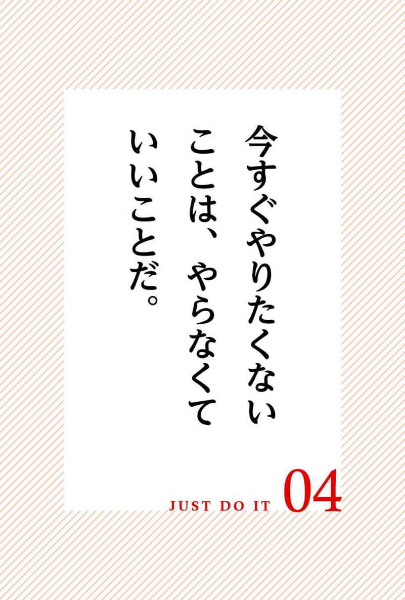
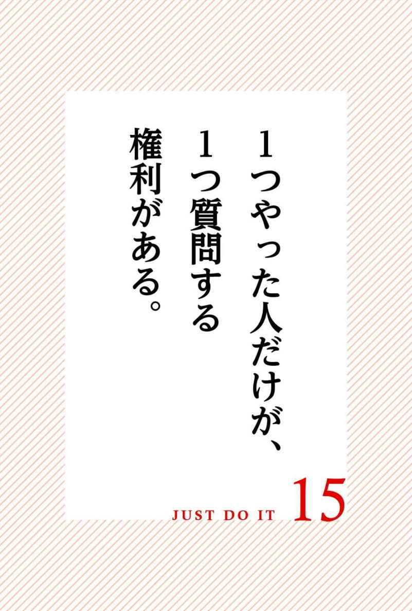
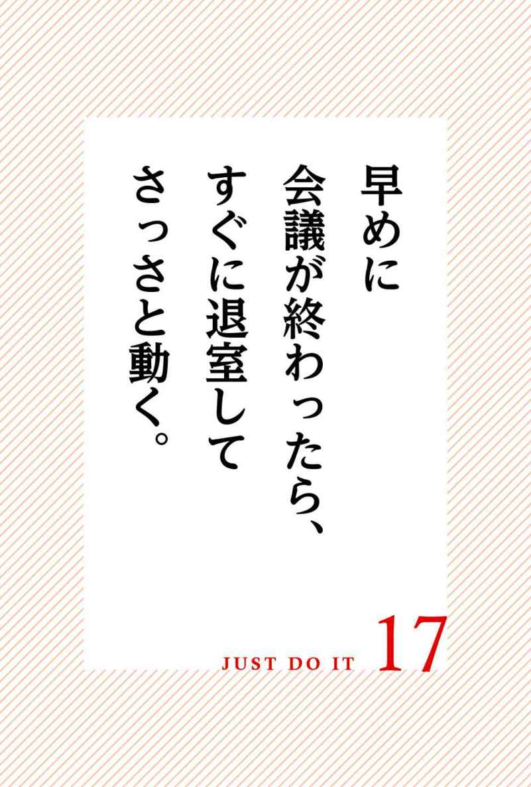
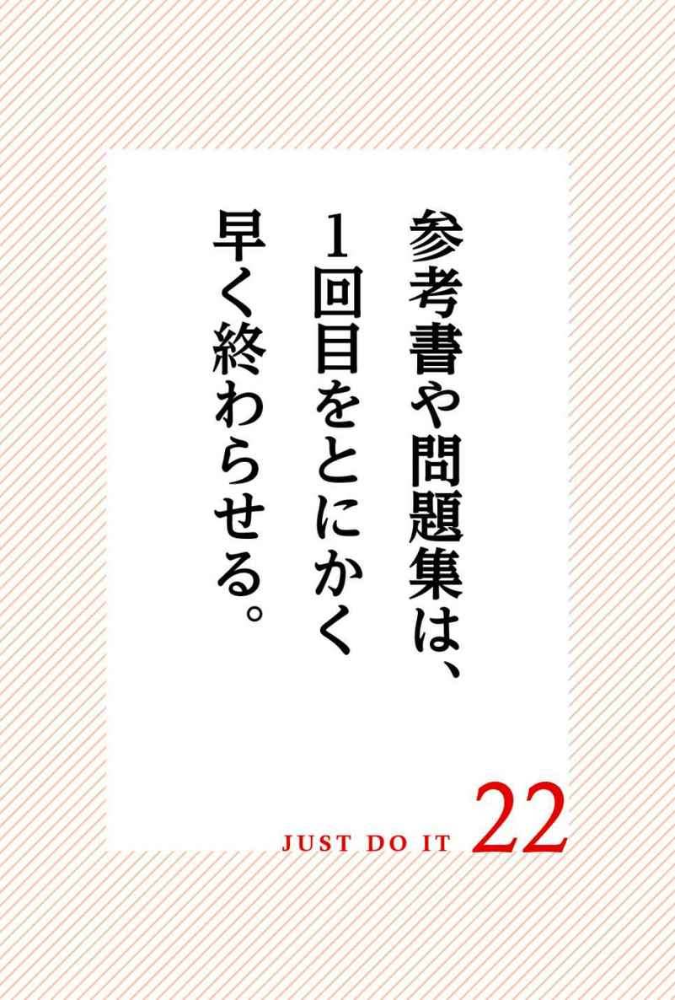
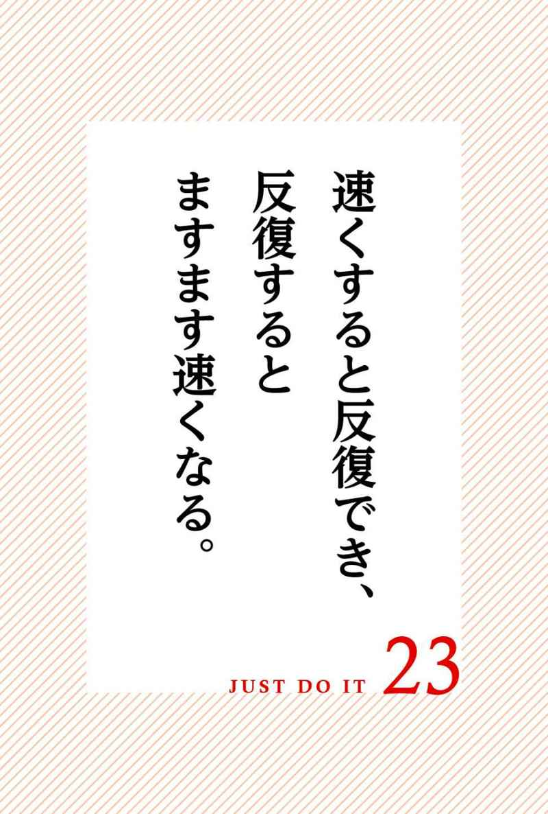
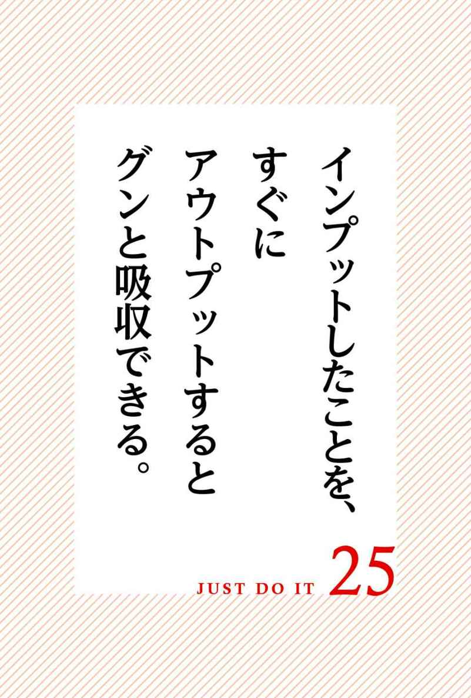
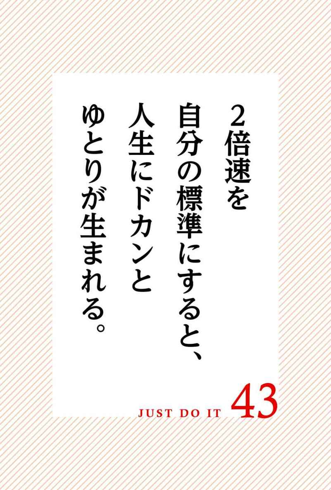

| 「すぐやる」力で差をつけろ | |
| 千田 琢哉 | |
| (2016) | |

これまで一緒に仕事をした人たちから異口同音にこんな質問をされた。
「どうしたらそんなスピードで仕事ができるようになれますか？」
実は本書の企画もそんなところから生まれている。
私が仕事をスピーディーに仕上げられる理由はたった１つだ。
仕事をよく断るからだ。
安請け合いした仕事で忙しくなるよりは、スケジュールを空けておいたほうがいい。
なぜなら安請け合いして忙しくなると、自分が本当にやりたい仕事をキャンセルしなければならなくなるからだ。
やりたい仕事というのは、忙しい時に舞い込んでくると相場が決まっている。
正確には、妥協して引き受けた仕事に取りかかった直後に限って、本当にやりたい仕事が舞い込んでくるものだ。
サラリーマン時代も独立後も、私の周囲には才能のある人たちがたくさんいた。
しかし、せっかくの才能を開花させずにその他大勢に埋没していく人が大半だった。
膨大な仕事を安請け合いしているうちに、安請け合いした仕事がその人たちの本業になってしまったからだ。
才気溢れる反面教師たちから学んだ私はこう決意した。
「あとで」と安請け合いして忙しくなるくらいなら、勇気を持ってその場で断ろうと。
勇気を持って不本意な仕事を断ることにより、スケジュールはスカスカになる。
すると断った直後にこんな不思議なことが起こる。
今すぐ取り組みたい、自分がお金を払ってでもやりたい仕事が舞い込んでくるのだ。
私はある年に、全国から講演依頼の問い合わせを５００件以上いただいた。
講演をすべて引き受けるだけでその年の収入は１億円をゆうに超えたはずだ。
ところが、そのうち４８０件以上の依頼を私はその場で断り続けた。
私にとって１億円もらえる講演よりもやりたいことが他にあったからだ。
その結果、まるでスカスカになったスケジュールを埋め合わせるかの如く執筆の依頼が殺到した。
不本意な仕事を「あとで」と安請け合いするくらいなら、今すぐビシッと断ろう。
安請け合いを断ち切ることで、あなたの「すぐやる」人生が始まるのだ。
２０１６年１月吉日 南青山の書斎から 千田琢哉
「すぐやる」力で差をつけろ もくじ
もしあなたの周囲にべらぼうに仕事が早い人がいれば、自分と何が違うのかを見極めることだ。
べらぼうに仕事が早い人は別に急いでやっているわけではない。
むしろ仕事が遅い人のほうが締め切りに追われて急いでやっているはずだ。
べらぼうに仕事が早い人は、余裕を持って淡々と仕事をしてはいないだろうか。
では、どうして淡々と仕事をしているのに仕事が早く終わるのだろうか。
理由は簡単だ。
早くスタートしているからだ。
余計な前置きも儀式もなしで、あっさりスタートしているのだ。
実は仕事で一番時間がかかるのは、前置きや儀式だ。
前置きというのは、どうでもいい質問をしたり、バカ丁寧な計画書を作成したりすることだ。
どうでもいい質問をするのは、時間稼ぎをして先延ばしにしたいからだ。
バカ丁寧な計画書を作成するのは、すぐに動く勇気がない臆病者だからだ。
儀式というのは、腹ごしらえやキックオフの宴会だ。
腹ごしらえをするのは、できるだけ仕事を開始するのを先送りしたいからだ。
キックオフの宴会をするのは、単に仕事をするよりも酒を飲むことが好きだからだ。
あなたもこういった前置きや儀式を仕事から省くと、確実に早くスタートできる。
早くスタートすると誰もが気づかされるが、まったく急ぐ必要がなくなる。
周囲が前置きや儀式を終えて取り掛かる頃には、あなたの仕事は終わりかけている。
前置きや儀式が染みついてしまっている連中は、そんなあなたを見て「うわー、仕事が早い！」と勝手に驚くのだ。
あなたは別に仕事が早いわけではなく、早くスタートしただけの話だ。
早くスタートすれば、どんなに丁寧にやっても早く終わる。
だからあなたは「仕事が早い上に丁寧だ」と評価を上げることになる。
前置きや儀式が染みついていた頃は、常に急いで仕事をしていた上にミスも多かったはずだ。
前置きや儀式と別れを告げた瞬間、あなたは「すぐやる」人のレギュラーメンバーになれる。
「あとで」やる人と、「今すぐ」やる人ではどちらが疲れるだろうか。
もちろん「あとで」やる人のほうが疲れる。
なぜなら、仮にやる仕事の量が同じでも、「あとでやらなければならない」という負担がずっと心にのしかかっているからだ。
「あとでやらなければならない」という負担を抱えながら仕事をしていると、今の仕事にも集中できないからスピードがどんどん鈍る。
この調子で「あとでやらなければならない」仕事がいくつも蓄積していくと、奴隷人生に突入してしまう。
「あとでやらなければならない」仕事が３つ重なると、「あとでやらなければならない」仕事が１００個重なるまで時間はそうかからない。
こうなると、もはや奴隷人生から抜け出すことはできなくなる。
笑い事ではなく、これが多くのサラリーマンの陥っている無間地獄ではないだろうか。
この無間地獄を断ち切りたければ、「今すぐ」やる以外に方法はない。
すべてにおいて即時処理を習慣にすると、「あとで」と言わなくてもよくなる。
「あとでやらなければならない」仕事がなくなると、心が軽やかになる。
心が軽やかになると、必然的に今の仕事に集中できるからスピードアップする。
そして、いつも「やらなければならない」ことが何もない状態にしておくと、「やりたいこと」だけで人生を埋め尽くすことができる。
私の場合はこの10年ほど、朝起きると「やらなければならない」ことが何もない。
すべての仕事は締め切りの何ヶ月も前に終了しているから、「さて今日は何をしようか」と自分の好きなことだけをのんびりとマイペースでやっている。
結果として、またしても締め切りを大幅に前倒しして仕事が終了してしまうのだ。
かくいう私も昔からずっとこんな前倒し人生を送っていたわけではない。
何度も痛い目に遭って「今すぐ」やる癖をつけたから、前倒し人生になったわけだ。
もしあなたが前倒し人生を歩みたければ、つべこべ言っていないで「今すぐ」やる癖をつけることだ。
ここだけの話、あなたがもう今の職場では後倒しの無間地獄に陥っているというのなら、退職することも考えていい。
その代わり、転職や独立してからは、命がけで「今すぐ」やることだ。

「すぐやる」人は、こう考える。
今すぐやりたくないということは、やらなくてもいいということだ。
あなたは信じられないかもしれないが、「すぐやる」人たちにとってこれはごく当たり前の常識なのだ。
善悪の問題は所詮人間がつくり上げたものに過ぎない。
現在の法律にしても人間がこしらえたものだから、絶対ではないのだ。
裁判官の中には、「あの判決は間違っていた」と涙ながらに告白する人もいる。
10年前なら余裕でセーフだったことが、今は完全にアウトということもある。
１００年前なら英雄とされていた人が、今は極悪人とされることもある。
逆も然り。
善悪の問題はそんないい加減なことばかりだ。
ところが好き嫌いとなるとどうだろう。
時代によってコロコロ変わる善悪の問題とは違って、我々の本能である好き嫌いという感情は絶対的なものではないだろうか。
ここはひとつ、自分自身に正直になってみよう。
あなたが今すぐやりたくないことをこのままやり続けて、本当に自分は幸せになると、心の底から思えるだろうか。
きっと幸せにはなれないとあなたは気づいているはずだ。
今すぐやりたくないことを無理してやり続けると、まず体を壊す。
体を壊すだけではなく、そのうち精神にも異常をきたす。
これは何を意味するのか。
それを続けていてもあなたは幸せになれないと、あなたの体が訴えているのだ。
世の中には小説を書いて人を感動させるために生まれてきた人間が確実にいる。
世の中にはスポーツ選手として活躍するために生まれてきた人間が確実にいる。
世の中には公務員として地道に働くために生まれてきた人間が確実にいる。
それは自分の体の反応に素直に従えば自ずと見えてくるものだ。
長期的な幸せを獲得している人たちは全員次の事実を知っている。
今すぐやりたいことこそが、自分が幸せになるために必要なことであると。
本気で幸せになりたければ、今すぐやりたいことだけをしていられる環境を構築することだ。
食事の際に好きなものをあとに取っておこうと考える人がいる。
食事では、迷わず好きなものから食べることだ。
ストレートに好きなものから食べることで、あなたの人生は一変するだろう。
食というのは人間の最も強い本能の１つだ。
その本能があなたの人生に大きな影響を及ぼすのは容易に想像できるはずだ。
食で妥協するということは、人生を妥協するということだ。
食を充実させるということは、人生を充実させるということだ。
ここに議論の余地はない。
食事で好きなものから食べる人は、人生も好きなことから取り組む人だ。
人生を好きなことから取り組めば、あなたは必ず幸せになれる。
万一あなたが突然コロッと死んだとしても、あなたは好きなことをやってから死んだのだから後悔はないはずだ。
食事で嫌いなものから食べる人は、人生も嫌いなことから取り組む人だ。
人生を嫌いなことから取り組めば、あなたは必ず不幸になる。
万一あなたが突然コロッと死んだら、あなたは嫌いなことしかやっていなかったのだから後悔しか残らないはずだ。
あなたの人生を好きなことで埋め尽くしたければ、食事も好きなものから食べることだ。
好きなものをあと回しにすることを習慣にしていた人が、突然好きなものから食べようとするには勇気が要るかもしれない。
だが一度だけだと割り切ってそれを実行してみるのだ。
きっと拍子抜けするはずだ。
「こんなに簡単に幸せを享受できるのに、どうして今まで幸せを遠ざけていたのだろう」と思うだろう。
「幸せを享受するのはこんなに簡単なのか」と気づかされるのだ。
幸せはどこか遠くにあるのではなく、いつもあなたのごく身近に存在するのだ。
幸せはいつも自分のごく身近に存在するのに、灯台下暗しで〝今、この瞬間〟に感謝していないから、いつまで経っても幸せを掴むことができないのだ。
やりたいことからしゃぶりつけば、自然にスピードアップしていく。
やりたいことからしゃぶりつけば、優先順位なんて勝手に定まっていく。
ヒソヒソ話が醜いということは誰もが知っている。
だがついヒソヒソ話をしてしまうと悩んでいる人は多い。
そんな人たちに向かって、「ヒソヒソ話はいけないことです」といくら道徳論を言って聞かせても、何ら効き目はないはずだ。
なぜならヒソヒソ話は体が勝手にしてしまうその人の習慣だからである。
ヒソヒソ話が習慣になっている人は、ヒソヒソ話をしないように習慣づければいい。
ヒソヒソ話をしないように習慣づけるためには、「すぐやる」人になることだ。
「すぐやる」人は、ヒソヒソ話をしない。
「すぐやる」人は、ヒソヒソ話ができない。
「すぐやる」人には、ヒソヒソ話なんてしている暇がないからだ。
「すぐやる」人になると、ヒソヒソ話をする側ではなく、ヒソヒソ話をされる側になるからだ。
ヒソヒソ話をされる側になると、「ヒソヒソ話をする側より、ヒソヒソ話をされる側のほうが人生は楽しい」というごく当たり前の事実に気づく。
「すぐやる」人になるということは、傍観者から主人公へと引っ越すということだ。
同じ地球上に住んでいても、傍観者の世界と主人公の世界ではまったく別になる。
どちらの住人になるかは、１００％あなたの好みの問題だから他人にとやかく言われることではない。
どちらでもあなたが好きなほうを選べばいい。
人は、自分がヒソヒソ話をされる側になって初めて「ヒソヒソ話をしている側はこんなにカッコ悪いものなのか」と気づかされる。
自分は死んでもヒソヒソ話をする側には戻りたくないと強く心に思う。
こうして人生のステージはアップしていくのだ。
もしあなたが自分の人生を主人公として生きていくことを選ぶのであれば、「すぐやる」人になればいいだけの話だ。
「すぐやる」人になれば、雑音は聞こえなくなる。
「すぐやる」人を貫けば、雑音はこの世に存在しないのと同じだ。
どうしてあなたのスピードが鈍るかといえば、他人のせいにするからだ。
「先生がそう言ったから......」
「お母さんがそう言ったから......」
挙句の果てには天気や運のせいにしてまで逃げ回る人もいる。
人は依存心が芽生えると、スピードが鈍るのだ。
なぜなら失敗した場合の言い訳を考えながら行動するからである。
心が逃げたまま今すべきことに集中せずして、何かを成し遂げられるはずがないのだ。
依存心を断ち切るためには、「すぐやる」人になることだ。
「すぐやる」人になれば、言い訳を考える暇がなくなる。
言い訳を考える暇がないということは、他人のせいにできないということだ。
これは素晴らしいことだ。
「すぐやる」ことによって依存心を断ち切り、今すべきことに集中できるからだ。
もしあなたが新人だとして、「まだやっていないのか！」と叱られているようでは絶望的だ。
「まだやっていないのか！」というのは、正確には叱られてすらいない。
率直に申し上げて「まだやっていないのか！」と言われるのはスタートラインにも立っていないということなのだから、戦力としてカウントされておらず叱る価値すらないと考えていい。
あなたが新人なら、「まだやっていないのか！」とだけは言われないようにすることだ。
どんなに未熟でもいいから、命がけで「すぐやる」姿勢だけはアピールすることだ。
そしてどうせ叱られるなら、「わからないことがあったら、ちゃんと聞け！」と言われることだ。
「わからないことがあったら、ちゃんと聞け！」と言われるということは、あなたには見所があるということだ。
「わからないことがあったら、ちゃんと聞け！」ということは、あなたがちゃんと動いたということだからである。
私がコンサルタントとして様々な組織に関わる中で、こんな現象がよくあった。
「まだやっていないのか！」と言われる新人が、「わからないことがあったら、ちゃんと聞け！」と言われる新人を見下して嘲笑っている現場を目撃した。
だが１年経過したら、前者は後者にあっさりと実力で抜かれていたのだ。
５年後には、前者は後者の部下としてこき使われていた。
あれこれ言い訳をして行動を遅らせるほど、出世のチャンスは離れていくのだ。
「すぐやる」人は、人生で最も大切なものは時間だということを知っている。
頭で知っているだけではなく、体で理解している。
反対にすぐやらない人は、人生で最も大切なものはお金だと思っている。
口ではいくらでも美辞麗句を並べ立てられるが、行動には本音が表れる。
すぐやらないことの本質を突き詰めてくと、なるべく働かず仕事を先延ばしにしてお金が欲しいということに他ならない。
率直に申し上げて、大半のサラリーマンはこれに該当する。
だからすぐやらずにだらだら残業をして、限界いっぱいまで残業代を請求するのだ。
ここに言い訳の余地はない。
「すぐやる」人は、残業などで稼ごうとしない。
残業代をもらうくらいなら、さっさと仕事を終わらせて時間をもらう。
時間をもらうということは、お金で時間を買うということだ。
たとえば「すぐやる」人は早寝早起きだ。
残業などせずにさっさと帰宅するから睡眠時間もたっぷり確保できるのだ。
家族団欒の時間もあって、ストレスを溜め込まずに健康的な人生を送れる。
結果として朝の目覚めもすこぶる快調だ。
あるいはキャリアアップしていく若者は、当たり前のように平日に勉強をしている。
残業代を稼ぐ時間を惜しんで、その時間に得意な英語能力に磨きをかけたり、難関資格試験に向けてイキイキと勉強したりしているのだ。
自分が着実に夢に近づいていく実感があるから、毎日が楽しくて仕方がない。
こうして「すぐやる」人は、お金で自分の好きな時間をどんどん買っていく。
すでにお気づきのように、将来幸せなお金持ちになるのは「すぐやる」人だ。
「すぐやる」人はますます短時間で仕事を済ませて、生み出した時間で自分をどんどん成長させていくことができるからだ。
究極的には、「すぐやる」人は寿命を延ばす。
「すぐやる」人には時間があるから、体に何か異変があればすぐに病院に行ける。
たいていの病気は、すぐに病院に行って早期発見すれば治るのはご存知の通りだ。
病気に限らず、人生のトラブルへの対処というのは、「早くてよかった」ということはあっても、「遅くてよかった」ということは滅多にないのだ。
私はこれまでに３０００人以上のエグゼクティブと対話してきた。
その中には寝食をともにした人も数多い。
当たり前だが、エグゼクティブたちは「すぐやる」集団だ。
「すぐやる」集団であるエグゼクティブたちの共通点は、驚くほど寝つきがいいということだった。
大袈裟ではなく、電気を消した瞬間に気持ちよさそうにいびきをかき始める人もいた。
『ドラえもん』に登場するのび太は寝転がってわずか１秒以内にノンレム睡眠に到達するというが、まさにあれを地で行く状態だ。
つい先ほどまで元気に話していたのに、次の瞬間完全に眠りに落ちているのだ。
こうして私は、「すぐやる」人は寝つきがいいということを学んだ。
エグゼクティブといえば、孤独に悩みを抱え込んでいるように見える。
山のように悩み事があり、不眠症の人も多いのだろうと思っていた。
ところが現実は違った。
起きている間にすべてを「すぐやる」ことによって、頭と体をフル回転させているから心地良い疲労感が襲ってくるのだ。
それにいくら悩んだところで、悩み事なんて解決されないことも彼らは知っている。
それなら最初から無駄に悩むのではなく、解決しないことは考えないで生きることが大切なのだ。
仮に「明日倒産するかもしれない」としても、悩んだからといって状況が良くなるわけではない。
それなら今できることをすぐにやって、結果は天に任せて眠ってしまうのが勝ちだ。
今すぐできることをすべてやった上で、結果を天に任せるのは現実逃避ではない。
挑戦者として立派な姿勢だ。
今できることをすぐにやる人生を送っていれば、必ず疲れる。
嫌な疲れではなく、スポーツで汗を流したあとのあの清々しい疲れだ。
反対に寝つきが悪いのは、すぐやらないからだ。
すぐやらないでだらだらと先延ばしにしていると、疲労も中途半端になる。
中途半端な疲労だからなかなか眠くならないのだ。
「最近寝つきが悪いな」と感じたら、「すぐやる」人から遠ざかっている証拠だ。
一緒にいて居心地がいい人がいるだろう。
いつも群がっていて安心感を持てる人がいるだろう。
それは生きているスピード感が同じだからである。
人はスピード感が同じ者同士で群れるようになっているのだ。
スピードが遅い人は、遅い人同士で群れる。
スピードが速い人は、速い人同士で群れる。
スピードの遅い人が、スピードの速い集団に紛れ込むと強い違和感を抱く。
スピードの速い人が、スピードの遅い集団に紛れ込むと強い違和感を抱く。
これは自然の摂理なのだ。
もしあなたが周囲に対して、「こいつら何をチンタラやっているの？」とイラついているとしよう。
傍から見たら、あなたこそチンタラやっている張本人なのだ。
あなたが「このノロマ」と見下している相手からは、あなたは「この超ノロマ」と見下されているのだ。
もしあなたが「すぐやる」人なら、ノロマな人は絶対にあなたに近づかない。
あなたが「すぐやる」人であれば、ノロマな人たちは一目散にあなたから離れ、どこか遠くの見えない場所であなたについてヒソヒソ話をしているはずだからである。
お互いに不満を持ちながらも傍にいられるということは、似た者同士ということだ。
これには例外がないのだ。
あなたが周囲のノロマさに不満があるなら、まずはあなたが「すぐやる」人に変身することだ。
そして周囲のノロマたちをあなたから自然に遠ざけてやるのだ。
義務教育では「誰からも好かれる人間になりましょう」と教わった。
お子様の模範解答としては、それが正解だった。
ところが社会人になったら正解は変わる。
社会では「ダメ人間からはちゃんと嫌われましょう」となるのだ。
あなたがダメ人間から好かれるということは、あなたがダメ人間ということだ。
あなたがダメ人間から嫌われるということは、あなたが優秀だということだ。
ダメ人間が周囲に一人もいなくなった頃、まもなくあなたの前に優秀な人が現れる。
あなたは一流のプロの仕事を直接目にしたことがあるだろうか。
できれば生の一次情報がいいが、テレビやパソコンからの二次情報でもいいだろう。
一流のプロたちの仕事ぶりをじっくり観察してもらいたい。
そうするとこんな共通点に気づかされるはずだ。
一流と呼ばれるプロたちは、仕事を仕上げるスピードが猛烈に速いのだ。
プロとは、仕事を桁違いに速く仕上げられる人のことなのだ。
一流の配管工は、桁違いに修理や取り付けのスピードが速い。
一流の外科医は、桁違いに手術のスピードが速い。
一流の同時通訳は、桁違いに通訳のスピードが速い。
一流の料理人は、桁違いに調理のスピードが速い。
一流の画家は、桁違いに描くスピードが速い。
仕事のクオリティもさることながら、仕事を仕上げるスピードに素人は腰を抜かす。
もしあなたが何かの道で本気でプロを目指しているのなら、その道のプロのスピードを一度でいいから目の当たりにしておくことだ。
「これは無理」と絶望したら、悪いことは言わないから今すぐ夢を辞退したほうがいい。
あなたには確実に無理だから、その道のプロを目指すのは時間の無駄だ。
厳しい言い方になるが、そこは踏ん張るところではない。
さっさと進路変更して別の土俵で勝負することだ。
「10年はかかるけど自分にはできる」と直感したら、ぜひ挑戦してみる価値はある。
何を隠そう、私自身がそうだったからだ。
10代の頃から負け続け人生を歩み続けてきた私は、絶望の連続だった。
ところが大学時代にプロの作家の仕事ぶりを目の当たりにしたところ、「あ、これなら俺もできる」と直感したのだ。
根拠など何もなかった。
その証拠にその時点では、文章を書こうと思っても仰々しいタイトルと自分の名前の二行しか書けなかった。
だが10年かけてコンテンツを練り込めば、必ず自分の本も将来その作家の隣に次々と並べられるイメージが鮮明に描けたのだ。
企画力は、頭の良さで決まると思っている人がいる。
もちろん頭が悪いより良いに越したことはないが、頭の良し悪しは企画力の決定打にはならない。
企画力の決定打は、スピードだ。
今この瞬間に即興でプレゼンできることが、本物の企画力なのだ。
「企画があります」と言っておきながら、提出に一週間も二週間もかかっていては相手に忘れられてしまう。
「企画があります」と言ってから一週間も二週間も経つと、相手の熱はすっかり冷めてしまう。
つまりその企画はボツになるということだ。
スローモーションの企画は、そもそも相手にまともに読んでもらえないのだ。
なぜなら企画を提出するのがスローモーションだということは、企画が始まってからはもっとスローモーションになるイメージが鮮明に相手の頭に浮かぶからだ。
企画書を見ている相手は、企画の内容よりも企画した人間の実行力を見ている。
実行力のない人間がいくら１００点の企画を運んできても、「う～ん、こりゃダメだ」と思ってしまう。
それよりは実行力のある人間が60点の企画を運んできたほうが、「なかなか面白いじゃないか、やってみろ」ということになる。
これがありのままの現実なのだ。
否、現実はもっと厳しい。
実行力のない人間が運んできた１００点の企画をボツにしておいて、その企画をそっくりそのまま実行力のある人間にやらせてしまうのだ。
私はコンサルタント時代に、顧問先に運ばれた様々な業者の様々な企画についてエグゼクティブたちから意見を仰がれた。
その際に実行力のないＡ社から運ばれてきた画期的な企画をボツにしておきながら、実行力のあるＢ社にその企画をやらせるエグゼクティブは珍しくなかった。
エグゼクティブたちにとって実行力とは、スピードのことだ。
問い合わせに対するレスポンスの速さ、今この瞬間に即興でプレゼンできる力のことだ。
最強の企画力とは、その場でホワイトボードや裏紙でプレゼンができる力のことだ。
仮にあなたが課長だとしよう。
あなたの部下が課長であるあなたを飛び越えて部長に直接相談する事件が発生したら、それはあなたの責任だ。
組織として直属の上司を飛び越えるのはあるまじき行為であり、善悪でいえばあなたの部下は悪だ。
だが本質的な問題解決をしたければ、この問題を善悪の問題で終わらせないことが大切だ。
なぜ部下はあなたを飛び越えたのかを冷静になって考えるのだ。
部下だってあなたを飛び越えるのは、悪いことだと知っているはずだ。
悪いことだと知っていながら、あえてリスクを冒して飛び越えたのには理由がある。
あなたの決断が遅いからだ。
あなたがいつまでもグズグズしているから、部下はあなたに愛想を尽かしたのだ。
部下が上司に愛想を尽かすのは、上司の頭が悪いからではない。
上司が決断を間違えるからでもない。
「この上司は決断できない人だ」とわかった瞬間に、部下は上司に愛想を尽かすのだ。
頭なんて多少悪くてもいい。
決断を間違えることがあってもいい。
だが決断できない人は、絶対に人の上に立つべきではないのだ。
部下に飛び越えられるようになったら、あなたはもう上司ではないということだ。
もう少しわかりやすく言えば、あなたの存在は邪魔だということだ。
解決方法は二つしかない。
黙ってあなたがその組織や立場から退くか、決断する人間になるかである。
組織を去るのは逃げではない。
どうしても決断できないと真剣に悩んで、ノイローゼになってしまう人たちを私はこれまでに多数見てきた。
人にはそれぞれ持って生まれた役割があり、役割に合わないことはやらないほうがいい。
決断しなくてもいいポジションや仕事だって探せばいくらでもある。
それが嫌なら、「目の前の決断から逃げない」と今すぐ決断することだ。
仕事で意外に邪魔になるのは、正論と雑用だ。
正論と雑用が悪と言っているのではない。
正論と雑用を盾にして、「私はこれ以上仕事ができません」と逃げてはいけないということだ。
否、逃げたければ正々堂々と逃げればいいのだが、正論と雑用を盾にして逃げているのがばれていないと思っているその感性の鈍さに気づくべきなのだ。
「とりあえず手分けして１００件ずつ電話してみよう」と上司に言われた時、「それは相手に迷惑だと思います」「今の時代にそのやり方は古いです」という反論は正論だ。
だが上司の指示というのは、組織の方針でもある。
組織で生きている以上、方針には従うべきだ。
方針に従えなければ、さっさと組織を去るべきなのだ。
本当は「それは相手に迷惑だと思います」「今の時代にそのやり方は古いです」というのは建前で、本音では電話するのが怖い、面倒臭いだけだ。
自分が怖いとか面倒臭いとは正直に言えないから、正論を盾にして逃げるのだ。
こうして正論というのは、卑怯者の手によって仕事を滞らせる原因となるのだ。
あるいは雑用をやっている最中に先輩から「今、大丈夫？」と声をかけられそうになったら、急に忙しそうにして声をかけられにくいオーラを発する連中がいる。
先輩の「今、大丈夫？」の真意は、「今すぐその仕事を中断して私の話を聞きなさい」ということなのだ。
にもかかわらず、目を合わせずに忙しいふりをしていると、もうそれだけで先輩としては何が何でも邪魔したくなる。
あなたは先輩に邪魔された挙句、嫌々やらされた仕事の評価も低くなる。
嫌々やらされた仕事は概してスピードも鈍くなる上に、クオリティも低い。
踏んだり蹴ったりとは、まさにこのことだ。
それに、こんなことをやらかしていると、あなたはいつまで経っても雑用から抜け出せなくなってしまう。
以上を読んで「あ、これは自分のことだ」と気づいた人はまだ大丈夫だ。
自分で気づいた人は、今から人生を変えることができるからだ。
一番怖いのは、「そういうの、いるいる」と他人事のように笑っている人である。

新入社員で恐ろしいのは、「自分は教えてもらって当然」と思い込んでいる人間だ。
ここ最近は「新入社員だからわからなくて当然」「新入社員だからできなくて当然」と、ふんぞり返っている連中も増えていると聞く。
この際ハッキリお伝えしよう。
仕事というのは、教える価値のある人間だけに教えればいいのだ。
教えたくなる人間だけに教えればいいのだ。
採用されたから自分は教わって当然ということはないのだ。
ここが学校教育と社会人教育の決定的な違いだ。
採用された中でも、かわいげのある人間とかわいげのない人間がいる。
かわいげのある人間は採用に成功したと見なされ手をかけて育ててもらえるが、かわいげのない人間は採用ミスと見なされて干されるだけの話だ。
かわいげのない人間は放置プレイをされて、あとから入社してくる後輩にどんどん抜かれるから耐えられなくなって辞めていくのだ。
辞めさせたい社員を完全犯罪の如く合法的に辞めさせるのなんて、とても簡単なのだ。
ここで大切なことは、かわいげのある人間になるにはどうすればいいかである。
それは、一度仕事の指示を受けたら、とりあえずやってみることだ。
とりあえずやってみた人間だけが、質問することを許されるのだ。
１つやった人だけが、１つ質問する権利を与えられるのだ。
これは精神論や根性論ではない。
やってもいないのに、まともな質問なんてできやしないのだ。
まともな質問というのは、具体的な質問のことだ。
まだやってもいないうちにする質問は、必ず抽象的になってしまう。
ところが動いたあとの質問は、必ず具体的になる。
しかも動いた人間にしか理解できない、具体的な質問になる。
質問というのは、具体的なもの以外は意味がないのだ。
私が仕事で話をする際には、いつも相手も驚くほど具体的になる。
具体的な話には、必ず数値と固有名詞が入る。
相手が本気であればあるほど、会話には数値と固有名詞が盛りだくさんになる。
経営者たちの話が数値と固有名詞で溢れているのは、彼らが本気で生きているからである。
会議中につい携帯に出てしまう人がいる。
私のサラリーマン時代にも会議中に携帯に出てしまう人がいた。
しかもそれが会議の主催者である上司だったりすることが多いから始末に負えない。
会議中に携帯に出るために席を立つと、その瞬間にその会議のステイタスが一気に下がる。
なぜなら、今やっている会議よりも、突然かかってきた電話のほうが重要だということが周囲に伝わってしまうからだ。
「これはその程度の会議なのね」ということが、暗黙のうちに参加者全員に認識されるのだ。
中小企業の場合は、社長が会議中に携帯に出てしまう張本人であることが多い。
そういう会社の会議はたいてい長く、そして参加者たちは揃いも揃って元気がない。
社長がでかい声で携帯に出るたびに、会議の場は白けて時間だけが過ぎていくからだ。
社長がいない時は、部長が会議中に携帯に出る。
部長がいない時は、課長が会議中に携帯に出る。
これといった責任者がいない時は、平社員たちが会議中に携帯いじりに精を出す。
当然会社の経営も傾くというわけだ。
私のコンサルタント時代には顧問先の会議では携帯の持ち込みを一切禁止した。
もしその時間に会議よりも重要な電話がかかってくる可能性がある場合は、会議を延期するべきだ。
会議中は、出席者の人数分の人件費をその間ずっと垂れ流している状態だ。
つまり会議をやるからには、会議以上に大切な用事はあってはならないのだ。
携帯の持ち込みを禁止すると、多くの会社では会議の時間が大幅に短縮された。
会議が終わるまで携帯のチェックが一切できないから、みんな集中して早く会議を終わらせるようになるからだ。
携帯が浸透したことによって、連絡や調べごとは格段に速くできるようになった。
だが携帯が浸透したことによって、逆にスピードが遅くなった人も多い。
携帯をいじって仕事をしているふりをしたり、暇さえあれば「センター問い合わせ」をしていたりする寂しがり屋のオジサンは本当に多い。
「最近、スピードが鈍ったな」と感じたら、一度携帯と距離を置いてみることだ。

予定よりも会議が早く終わることがある。
その際に「あれ？ こんなに時間が余っちゃったよ」と言って、「せっかくだからついでにこれもやっちゃおうか」とその時間を埋め合わせようとする人がいる。
その場合、「ついで」をやることによって結局会議は延長されることが多い。
１時間の予定の会議がせっかく30分で終わったのに、最終的に２時間の会議になってしまうのはたいていこのパターンだ。
会議で呑気に「ついで」なんてやっている場合ではない。
会議では予め定めておいた必要最小限のことを決めたら、さっさと動くことだ。
会議のための会議をやるのではなく、動くための手段として会議をやるのだ。
会議の予定終了時刻というのは、最悪の場合の保険だと考えよう。
その時間まで会議をやっていたら、時限爆弾が爆発する覚悟で会議に臨まなければならない。
15時終了予定の会議で15時ちょうどに終わっていては完全にゲームオーバーなのだ。
遅くとも予定の５分前にはすべての議題が終了して、予定終了時刻には会議室の後片づけまで完了しているのが当たり前なのだ。
そして会議が終了したら、電光石火の如く退室することだ。
退室した直後に、とりあえず会議で決めたことを０•１％でもやってみるのだ。
たったこれだけであなたは将来の幹部候補間違いなしだ。
会議終了後にいつまでもだらだらと会議室に残ったり、喫煙ルームでだべったりしている連中はすでに周回遅れだ。
私の場合は打ち合わせが終了して来客をお見送りしたら、次の瞬間には仕事を開始している。
別れ際の挨拶も「本日はありがとうございました」ではなく、「では今から開始します」と言っている。
来客が会社に戻る頃には、相手のパソコンには私からの企画素案メールが届いているという状態を目指している。
こうすることによって、相手に私の本気が伝わる。
こちらの本気が伝わると、相手も必ず本気になる。
本気とは、最初の一歩目のスピードのことだ。
仕事について、20代を中心にこんな質問がよく届く。
「仕事が早く上達するにはどうすればいいですか？」
これは簡単だ。
周囲よりもできるだけ早めにたくさん失敗しておくことだ。
いつもあなたが代表で最初に失敗をすることを目指せばいい。
これまで数々の組織で若手社員の育成に携わってきたが、人間には二通り存在することに気づかされた。
最初に失敗する人間と、最後に失敗する人間だ。
最初に失敗する人間は、最終的に成功することが多い。
最終的に失敗する人間は、最初に成功していることが多い。
これはギャンブルを想像するとわかりやすい。
ギャンブルで身を滅ぼす人たちの共通点は、ビギナーズラックがきっかけになっていることだ。
悪友にしつこく誘われて最初は嫌々ギャンブルに付き合ったのに、ビギナーズラックで「え!? こんなに楽に10万円も稼げるの？」と勘違いしてしまう。
これまでコンビニのアルバイトで１日中働いても１万円も稼げなかったのに、わずか１時間足らずで10万円も稼げたのだから勘違いするのも当然だ。
ところが10万円など次の勝負では一瞬で吸い取られてしまい、顔を真っ赤にしてそれを取り戻そうとすると気づいたら１００万円吸い取られている。
１００万円で懲りればまだ致命的にはならないが、１００万円を取り戻そうとすると、ついには借金してまでギャンブルにのめり込んでいき、身を滅ぼすのだ。
最初に３万円負けておけば、ギャンブルにはのめり込まなかった。
アルバイトで３日間汗をかいても稼げないお金が、一瞬で消えてしまうギャンブルの恐ろしさを体で学ぶことができて賢くなるからだ。
仕事もこれと同じで、最初に「チョロイ」と思ったら身を滅ぼす。
最初からラッキーで成功したら、それは借金を背負ったのと同じだと気づくことだ。
最初に痛い目に遭ったら、それは生涯の宝になると感謝することだ。
仕事は初期の頃にたくさん挑戦してたくさん失敗しておけば、間違いなく上達する。
ここだけの話、最初のチャレンジなら失敗しても周囲は許してくれるのだ。
私はコンサルタント時代に様々な業種業界に対してマーケティングを構築してきた。
マーケティングとは、少しでも楽に仕事が入ってくる流れを創ることだ。
インターネットでバナー広告を出すのは、少しでも楽に仕事が入ってくるようにするためだ。
新聞広告を出すのは、少しでも楽に仕事が入ってくるようにするためだ。
テレビでＣＭを流すのは、少しでも楽に仕事が入ってくるようにするためだ。
ところが、次第にこんな厳しい現実が浮き彫りになってきた。
その時点では画期的なマーケティングを構築して売上が跳ね上がっても、まもなく本来の実力に落ち着くということだ。
否、正確にはピークが高ければ高いほどその反動で落ちぶれ方も悲惨だった。
たとえば、広告ではまるで世界一のサービスを約束しているような言葉が並んでいるが、実際にサービスを受けた人たちが「広告と事実がまるで違う」と感じたとする。
そうなるともう大変で、あちこちにあらゆる手段で口コミが拡散されてしまう。
最初の期待が大きければ大きいほどに、期待を裏切られたショックは大きいものだ。
だから、無理にピークを高くするとその反動でマイナスも大きくなってしまうのだ。
ここで大切なことは、マーケティングの本質にもう一度立ち返ることである。
「マーケティングとは、少しでも楽に仕事が入ってくる流れを創ること」だと私は定義したが、「楽に仕事が入ってくるとは何事か！」と怒りを覚える人もいるかもしれない。
だが、仕事を受注するところですでに疲弊していたら、肝心な仕事をするところでもう余力がないという本末転倒な事態に陥ってしまう。
本音としてはどんな会社でも仕事は楽に受注できるに越したことはないはずだ。
そしてヒト・モノ・カネといった経営資源は、できるだけ肝心な仕事に集中させたいものだ。
そのために本当に重要なことを私はコンサルタント時代の終盤に気づかされた。
「今の仕事は、即、次の仕事に繋がる」という、呆れるほどシンプルな事実だ。
今の仕事の終了は、次の仕事の開始なのだ。
今の仕事で依頼者を感激させることが、次の仕事を最も楽に受注する方法なのだ。
コンサルタント時代の終盤に、顧問先にこの事実を提供できて本当にラッキーだった。
楽に仕事が受注できるということは、それだけサービスに注力できるということだ。
キリのいい時間から勉強をしようとする人は、永遠に勉強ができない。
夜の８時からスタートしようとすると、必ずテレビで面白い番組が始まる。
予告編が流れると、本編も見ずにはいられないものだ。
視聴率を上げるために、テレビ局も必死で知恵を絞っているのだ。
10分や20分なんてあっという間に過ぎてしまう。
そのうちに「今日は９時からでいいや」と考えて、そのままテレビを見続けてしまう。
ところが今度は９時からもっと面白い番組が始まる。
しかもそれが２時間の企画モノだったりする。
もちろんあなたは簡単にこの誘惑に負けて「今日は特別だ。11時からは絶対にやるぞ！」と意気込む。
夜も11時になると誰でも小腹が空いてくる。
そこで「腹が減っては戦ができぬ」などと都合のいい理由をでっち上げて、腹ごしらえにカップラーメンをすする。
こうして睡魔に襲われて「明日の朝早く起きて勉強だ！」と決意して、翌朝脆くもその決意は崩れる。
これが勉強のできない人の典型的な生活パターンである。
否、夢を成し遂げられない人に共通する人生のお決まりのパターンだと考えていい。
こんなダメ人生から脱却するには、キリのいい時間から勉強しようとしないことだ。
８時から勉強するのではなく、今この瞬間から勉強するのだ。
夕食後の歯磨きをしたらそのまま机に直行するのだ。
それが７時32分だろうと８時11分だろうと関係ない。
キリの悪い時間から始められるのが、やる気なのだ。
キリの悪い時間から始められるのが、本気なのだ。
私のコンサルタント時代には「じゃあ、キリのいい来月から」「もう11月も終わりだし、キリのいい来年から」と、プロジェクトのスタートをキリのいいタイミングに先送りしようとする社長とは極力仕事をしなかった。
そういう社長はすべての仕事を先送りして、結局プロジェクトは失敗に終わるからだ。
勉強に限らず、スタートするのは今この瞬間がベストタイミングなのだ。
これはすべての勉強に当てはまることだが、最初の１冊目にどんな本を選ぶのかは極めて重要だ。
努力家なのに勉強でなかなか成果が出ない人は、いきなり名著と呼ばれる本から入ってしまう。
誤解なきように伝えておくが、名著から入ってもスイスイ理解できる人はそれでいい。
ところが大半の人は名著が名著だと理解できずに挫折してしまうものだ。
名著が名著だと理解できるようになるためには、初歩や基礎がしっかりとできていなければならない。
概して初歩とは教科書の例題レベルであり、基礎とは教科書に準拠した問題集レベルだと考えればいい。
私が大学生だった時、自身の家庭教師の経験と周囲の塾講師の経験を重ね合わせたところ、大学受験でつまずく生徒というのは小学生レベルの勉強が理解できていないということで見事に意見が一致した。
特に理数系はそれが顕著で、いくら中学や高校の勉強を長時間しても、小学生レベルの算数がおろそかだと一向に成績が上がらなかった。
より厳密には、算数の文章問題を解く力がすべての根底にあることに気づかされた。
そのため「落ちこぼれが一発大逆転で見事一流大学に合格!!」という奇跡の成功談は、ほとんどが私立文系のはずだ。
私立文系なら中学レベルからの英語で多少苦労するくらいであとは暗記で凌げるので、小学生からの積み重ねはほぼ関係ない。
これが難関国立大学になると文系でも理数系科目から逃げることはできない。
しかも数学は２次の記述試験でも必須で、配点も高く合否の決定打になったりする。
つまり国としては、小学生レベルの初歩から理解できている学生を要求していることに他ならない。
これはお子様向けの勉強だけではなく、大人になってからの勉強も同じだ。
初歩をおろそかにせずちゃんと理解することが、あらゆる勉強の要なのだ。
そして初歩を理解するためには、いちいち他人の目を気にしないことだ。
漫画本でも、幼児向けでも、絵本でも、自分が理解できる本で初歩を習得するのだ。
初歩さえ妥協せずに理解すれば、基礎も標準も応用も短期間でクリアできる。

受験や資格試験などゴール設定が明確な勉強だけでなく、仕事で早く概要を掴みたいという場合にも共通する勉強のコツがある。
それは、とにかく１回目を早く終わらせることだ。
受験や資格試験などの勉強をする際は、参考書や問題集をとにかく一度最後までやり切ることだ。
あなたの周囲に金融機関に就職した人がいればわかると思うが、入社して最初の数年間は資格試験の嵐だ。
私も最初に就職したのが保険会社だったから、いきなり業界内の資格試験の嵐に巻き込まれてしまった。
しかもお子様と違ってわざわざ授業なんて用意してもらえないので、気合いで時間を捻出しなければ永遠に勉強できない。
物理的に不可能だと思えるスパンで、次々に試験当日が迫ってくるのだ。
そんな中で自然と編み出されたのが、会社で配布されたテキストは１回目をとにかく早く終わらせるというやり方だった。
とりあえず１回目を猛スピードで最後まで終わらせてしまえば、２回目以降は精神的にも時間的にもどんどん楽になる。
３回目、４回目になると「何とかなる」と思えてくるのだ。
仕事で膨大な資料を与えられてごく短時間のうちに概要を掴まなければならない場合も、どれだけ取りこぼしがあってもいいから、とにかく一度最後まで読み切ることだ。
最後まで読み切るコツは、いちいち読み返さないことだ。
これは私がコンサルタント会社に転職した頃に先輩から教わったコツだ。
転職したての私が携わったプロジェクトの１つに、某老舗石鹸メーカーの仕事があった。
私はそれまでの人生で石鹸についてまともに考えたことがなかったため、何の予備知識もないままに業界紙や専門書をどっさりと机の上に並べられて大いに困惑した。
今からそれらに目を通して概要を把握し、翌週にはその会社の重役たちとキックオフの会議をしなければならない。
とても読み切れないと顔面蒼白になっている私に、先輩はこう声をかけてくれた。
「いちいち読み返すな」
この言葉にどれだけ支えられたかわからないし、プロの姿勢を教わった気がした。

私は１年ごとに最低でも１分野ずつ勉強をしている。
ある年は家庭の医学のような本を読み込んでいたし、別のある年には大学入試の評論文を繰り返し読んでいた。
いちいち「今年はこんな勉強をしています！」と宣言するのも忘れるくらいに、毎年誕生日が近づいてくると当たり前のように何かを勉強するようになった。
その結果、面白いことに気づかされた。
１年間、何かの分野を勉強すると、その分野の専門家と話をしてもまったく話についていけない状態は避けられるようになるということだ。
もちろん専門家はこちらにレベルを合わせてくれるわけだが、それでも学術的に予備知識がある相手とない相手とでは話の深さが変わるはずだ。
予備知識がなければ天気の話で終わってしまうが、予備知識があればどんどん話を掘り下げて親しくなれる。
この１年単位の勉強のコツとしては、とにかく速く反復することだ。
別に受験や資格試験と違って期限があるわけではないが、わからないところでいちいち立ち止まらない。
もちろん気になった点があればその都度ネットで調べることはある。
だが基本的にはいちいち立ち止まらないでどんどん先に進むことによって、あとから知識が繋がってくるのだ。
１回熟読しようと果敢に挑戦して挫折するより、最初の３回は通読でいいと割り切っているほうが断然吸収率は高い。
１回目にわからなかったことも、２回目にはわかるようになっている。
２回目にわからなかったことも、３回目にはわかるようになっている。
わかるようになってくると、ますます読むスピードが速くなる。
速くすることで反復でき、反復することでますます速くなるのだ。
私の場合は１８００ページ近くある本でも、１年で４周することができた。
これが普通の２００ページレベルの本だと数十回は反復できる。
何度も反復しているうちにその本が自分の体の一部のようになり、「自分が編集者ならここをこうするけどな......」などとつい余計なことも考えてしまう。
結局のところ、反復に勝る勉強はないのだ。
あなたは学校の授業を受けていて眠くならなかっただろうか。
あるいは教室の授業形式がどうも生理的に受け付けないという人はいないだろうか。
私はその典型だった。
どうも他人に高い場所から教えられると、拒絶反応を示す体質だったようだ。
授業がまるで子守唄のように聞こえてきて、すぐに眠くなった。
別に教師をバカにしていたわけではないのだが、本に書いてある内容をわざわざ読み上げてくれなくてもいいのにといつも思っていた。
たとえば数学の授業でもわざと問題集の模範解答を没収して、授業を聞かせようとする教師に憤りを感じた。
精鋭の専門家たちが執筆した詳しい模範解答は、学校の教師の拙い解説よりも遥かにわかりやすい解説なのだから、それを見て勉強しない理由などない。
だが最近私はある動画授業を受けて、ちょっと考え方を変えた。
それは一流の講師の授業は芸術的で、学校の授業とはまったく別物だということだ。
それもそのはず。
学校の教師はいったん採用されたら、どんなに授業が下手でもクビにはならない。
極端な話、公立の学校であれば日本一授業が上手い教師と日本一授業が下手な教師の給料が同じでもおかしくない。
つまりプロの世界ではないのだ。
ところが予備校や専門学校で飯を食っている講師たちは、生徒たちから「わかりにくい」「面白くない」と評価されたら、そのまますぐにクビになる。
つまりプロの世界だということだ。
現在私は年会費を払って動画授業を受けているのだが、いずれ学校の教師を全員クビにしてこうしたプロ講師の授業を全国に流せばいいと確信している。
子どもたちは学校に無理に通う必要もなく、自宅で動画授業を受ければいい。
動画授業ならわからない部分を繰り返し視聴できるし、わかる部分はすっ飛ばせる。
真面目な話、国が本気で教育改革に取り組んで動画授業を導入すれば、子どもの学力は大幅にアップするはずだ。
そのくらい一流講師の動画授業は楽しく、継続もしやすいのだ。
あなたも学ばなければならないことがあれば、今すぐ動画授業を受講してみることだ。
間違いなく勉強好きになって、夢中で取り組めるはずだ。

自分は記憶力が悪いと悩んでいる人がいる。
そんな人におススメの方法がある。
憶えたことを、すぐに実践したり、他人に説明したりしてみることだ。
インプットしたことをすぐにアウトプットすると、グンと吸収できるのだ。
これは脳科学的にも立証されている。
本当に理解しているなら、誰にでもわかるように説明できるはずだ。
他の人にわかりやすく説明できないということは、本当は自分もわかっていないということだ。
本当に理解しているなら、どんな質問にもわかりやすく答えられるはずだ。
答えられない質問があるということは、本当は自分もわかっていないということだ。
たとえば、高校時代に地理が抜群にできる友人がいた。
どんな問題が出題されてもスラスラと答えられて、その友人の解答用紙がそのまま模範解答になるくらいだった。
私は彼に地理の勉強の仕方を聞いて驚いた。
何と自宅でツアーコンダクターの真似ごとをしながら、世界中の案内をしているというのだ。
しかも観光客からの質疑応答もすべて独り芝居でこなしているという。
「１つの国について30分くらい語り続けられるようになれば、簡単にテストで満点が取れるようになるよ」
もはや受験勉強のためではなく、完全に趣味の世界だった。
だが私は彼に大切なことを教わった。
これぞ、勉強の真髄だということだ。
インプットしたことを、とりあえずアウトプットする。
インプットが少ないままにアウトプットすれば、すぐに知識が枯渇してしまう。
するとそれがあなたの学習意欲に火をつけて、ますますインプットできるようになる。
自分としてはかなりインプットしたつもりでいても、いざアウトプットしてみると意外に早くネタが底を尽いてしまうものだ。
アウトプットすることによって大量のインプットがこなせるのは、呼吸と同じだ。
アウトプットすることによって、人の記憶力は定着するのだ。
これは勉強に限らないが、何か壁にぶつかるとすぐに「難しい」と口にする人がいる。
「難しい」と口にすることによって、本当に問題は深刻化していくから言葉の力というのは不思議だ。
もし勉強で早く上達したければ、「難しい」といちいち口に出して言わないことだ。
ジグソーパズルが好きな人は、複雑なパズルを見て「難しい」と言わず「楽しそう」とニコニコ笑うはずだ。
クロスワードパズルが好きな人は、難問題を見て「難しい」と言わず「面白そう」とはしゃぐはずだ。
登山が好きな冒険家は、険しい斜面を見て「難しい」と言わず「素晴らしい」とドキドキするはずだ。
あなたもうっかり「難しい」と言いそうになったら、「楽しい」「面白い」「素晴らしい」とワクワクする言葉に変えて発することだ。
鏡を見ればわかるが、「難しい」と口にしたあなたの顔は、深刻な表情をしている。
つまり全身の細胞が深刻モードになっている証拠だ。
「楽しい」「面白い」「素晴らしい」と口にしたあなたの顔は、イキイキした表情をしている。
つまり全身の細胞が幸せモードになっている証拠だ。
感情に言葉が従うのではなく、言葉に感情が従うのだ。
感情に表情が従うのではなく、表情に感情が従うのだ。
試しに今日から勉強していて難しい問題に出逢ったら、「うわっ、これは面白いぞ」と言ってみよう。
少なくとも思考停止状態にはならずに、楽しく考え続けることができるはずだ。
そしてどんなに複雑に見える問題でも、いくつかの知恵を新しく付加することによって、似たような問題が必ず解けるようになるはずだ。
類似問題が解けるようになった頃に、もう一度「難しい」と感じた問題を復習してみると、やっぱり「楽しい」「面白い」「素晴らしい」問題であったことに気づかされる。
目の前の問題は、「難しい」と口にすると敵になり、「楽しい」と口にすると味方になるのだ。
もしあなたが受験や資格試験の勉強をしているなら、合格までの期間は短ければ短いほどいい。
なぜなら受験や資格試験というのは手段であって、目的ではないからだ。
手段ではなく、手段の先の目的にあなたの貴重な時間を費やすべきだ。
受験や資格試験というのは、基本的に模範解答がすでに用意されている。
模範解答のある問題は、自力で考えてわからなければさっさと答えを見ることだ。
これが模範解答暗記競争の王道だ。
ところがたまに変なポリシーやプライドを持っていて、何時間も自力で考えてからでなければ答えを見てはいけないと信じている人がいる。
現実にこれを貫くと、時間がどれだけあっても不足する。
たとえば英文法の正誤問題は、知らない問題はどれだけ考えても絶対にわからない。
だったらさっさと模範解答を読んでしまい、「こういう場合は、こうなる」と理解して記憶してしまうのが早い。
あるいは数学で30秒考えても糸口すら掴めない問題は、30分考えてもやっぱり解けないことが多い。
だったらさっさと模範解答を読んでしまい、「こういう問題は、こう解く」と理解して記憶してしまうのが早い。
受験や資格試験の勉強の大原則は、知らない問題は絶対に解けないということだ。
知らない問題は早々に諦めて、模範解答を読んで理解し記憶していけばいい。
将棋と同じで定石をある程度記憶するまでは、直感やひらめきに頼らないことだ。
直感やひらめきを含めて本当に自力で考えなければならないのは、本番の試験問題のみと割り切ろう。
最後に、模範解答のある勉強を短縮する決定打として、過去問の活用を強調しておきたい。
過去問を受験直前の力試しで解こうとする人がいるが、それをやると確実に自滅する。
なぜなら過去問を直前になって初めてやっても、まったく解けないからだ。
昨年の合格最低点を大幅に下回る点数を獲得して、戦意喪失してしまうのがオチだ。
過去問は受験を決意したその日から、１問も解けなくていいから毎日眺めることだ。
そして勉強の進度に合わせてその都度過去問を解き、理解して記憶していくことだ。
受験直前に予備校講師のように過去問の解説をできるようになっていれば、合格だ。
受験や資格試験と違い、仕事で直面する問題の多くには模範解答が存在しない。
仮に模範解答のようなものがあったとしても、そこから利益が生じることはない。
利益が生じるのは、すべて模範解答のないものからである。
たとえば司法試験に合格するのに必要なのは、模範解答のある勉強だ。
だが司法試験に合格後、裁判で勝ち続けるのに必要なのは模範解答のない勉強だ。
司法試験に合格してもそれ自体に対してお金は１円も発生しないが、裁判で勝てばまとまったお金が入る。
あるいは出版業界で考えてみよう。
ミリオンセラーを１００％の確率で出せる模範解答は、現時点において１つしか存在しない。
自腹で１００万部すべてを購入することだ。
だがこれを現実にやると、10億円以上がぶっ飛んでいく。
これ以外にミリオンセラーを１００％出せる模範解答はないのだ。
たとえ有名人であろうと、膨大な費用をかけて広告を出そうと、全国の書店を行脚しようと、偉大な文学賞を受賞しようと、ミリオンセラーになる模範解答にはならない。
なぜならそんなことをやってきた人々はすでに数え切れないほどいて、そのほとんどがミリオンセラーになっていないからだ。
換言すれば、だからこそ仕事は面白い。
だからこそ、模範解答の存在しない世界は奥が深いのだ。
私もコンサルタント時代は「絶対に売上が倍増する方法はありませんか？」といった質問をよく受けたが、「わかりません。一生考え続けると決めています」と答えてきた。
未だに考え続けているが、これに対する解答は出ていない。
現在の執筆の仕事では「ベストセラーを出せる秘訣は？」「作家として売れ続ける秘訣は？」という質問をしょっちゅう受けるが、これも一生考え続けると私は決めている。
なぜなら考えれば考えるほど、本当にわからないからだ。
ここで大切なことは、模範解答がない問題は一生考え続けると腹をくくることだ。
腹をくくってしまえば、もうないものねだりをして無駄な時間を使わなくて済む。
つまり勉強のスピードがアップするということだ。
模範解答がない問題は、その都度、一生考え続けようと決断をしていく以外に方法はないのだ。
「三流の人間と決別しなければならないことはよくわかりました。ところで三流の人間の見分け方の基準はありますか？」
そんな質問が届いた。
二度続けて無断遅刻する人間は、三流だ。
こういう人間と関わると、あなたも一緒に落ちぶれていく。
「でも自分が一流であれば三流の人すら成長させますよ」と主張する人もいるが、なるほどそれはその通りだ。
だがそれは自分が一流になってから関わるべきであって、三流のうちから関わるべきではない。
三流の段階で一流の真似ごとをするのは、草野球の補欠がメジャーリーグの試合に出たがるようなものだ。
三流のうちはまず三流と関わらないことから始めるのだ。
三流と関わらないようにしていると、そのうち孤独になってしまう。
孤独になっていいのだ。
孤独になった状態というのは、計算機のオールクリアボタンを押した状態だ。
つまりゼロになったということだ。
こう書くと「ゼロということは、０点ということですか？」と怒られそうだが、三流の世界はそもそもマイナスなのだから、ゼロというのはかなり進歩したことになる。
ここでしばらく孤独に耐えていると、次第に孤独が寂しくなくなってくる。
孤独が寂しくなくなってきたということは、実力がついて強くなったということだ。
そして「このまま孤独も悪くないな」と思えてきた頃に、必ず新しい出逢いが訪れる。
これが一流への道なのだ。
勘違いしている人がとても多いのできちんと説明するが、三流が成長して、二流を経て一流になるのではない。
三流が今いる下りの階段に別れを告げて、まったく別の上りの階段に足をかけることで一流への道を歩み始めるのだ。
人生には三流の下りの階段と、一流の上りの階段しかないのだ。
自分のいる階段そのものを変えることは、遅刻魔と絶縁することから始まる。
「夢を叶えるために一番大切なことは何ですか？」
10代や20代の読者からそんな質問がよく届く。
あなたの夢を笑う人とは、今すぐ決別することだ。
これは、私がこれまでに読んできた本と、夢を叶え続けている成功者たちを目の当たりにして学んだ知恵だ。
成功者たちの日常会話には、「上場」「年収○○億円」「○○大臣に会ってきた」「来月に本を出す」「今度アイドルの○○を呼ぶ」といった言葉が普通に飛び交っている。
あなたの夢を笑う人なんて一人もいないし、むしろ自分の夢は小さいと思うくらいだ。
そんな言葉のシャワーの中に、日々あなたもいたらどうなるか想像してもらいたい。
きっと「自分も成功して当たり前」と考えるようになるだろう。
反対に、あなたの夢を笑う人たちの日常会話はどうだろう。
きっとヒソヒソ話ばかりしているはずだ。
うっかりあなたの夢を話そうものなら、こんな言葉が返ってくるに違いない。
「いつまでも夢ばかり追いかけていると将来大変なことになるよ」
「いい加減、現実を直視しなさい！」
「本当にそんな仕事で食べていけると思っているの？」
そんな言葉のシャワーの中に、日々あなたもいたらどうなるか想像してもらいたい。
きっと「夢は叶わないからこそ夢」とすっかり悟りの境地に入ってしまうだろう。
読者の中にも、すでにすっかり悟りの境地に入っている人がいるのではないだろうか。
そんな人でも、本書を読めば洗脳が解けるかもしれない。
あなたを洗脳したのは、これまで身近であなたが一番信頼してきた親や学校の教師であることが多い。
きっと親や学校の教師だって正しいことや良いことをたくさん教えてくれただろう。
だが親や学校の教師の言うことがこの世のすべてではないという事実に気づくのも大切なことだ。
そのきっかけになるのが、読書だ。
世の中には、親や学校の教師よりも幸せそうに生きている本当に凄い人たちが数え切れないほどいる。
少なくとも、あなたの夢を笑わずにちゃんと聞いてくれる人がいることだけは確かだ。
「千田さんの人脈術を教えてください」といった質問をよく受ける。
これまでに人脈に関する本も書いてきた。
正直に告白すると、私は友だちを増やそうと思ったり、人脈を拡げようと思ったりしたことはこれまでにただの一度もない。
本当に孤独をこよなく愛する人間であり、もし許されれば生涯孤独で死んでいきたいと本心から願っている。
それなのに昔から人脈が豊富そうに見られてしまうのは、きっと頻繁にお礼状を書くからだ。
年賀状や暑中見舞いは原則出さないが、よく気まぐれにハガキを出す。
旅に出かける何日か前に、「この人には不義理してきたな」と誰かの顔が思い浮かんだら、すぐに直筆でハガキを書く。
旅先からハガキを出すから、消印にはその地名が刻まれる。
すると相手は感激してくれることが多い。
これも一応伝えておかなければならないと思うが、私は相手に見返りを期待してハガキを書いているわけではない。
自分がわがままで好き放題に生きてきたから、せめて不義理をしてきた人に対してだけはお礼というより、むしろ謝罪の意味でハガキを書いているのだ。
その証拠に、ハガキを出す相手は仕事関係者が半分もいない。
ビジネス面で何もメリットがない相手に向けてハガキを書いている。
ところが不思議なもので、巡り巡って忘れた頃に助けてもらったり、仕事に繋がったりすることもある。
きっと私が生きている間には実現しないだろうが、いずれスーパーコンピューターが進化したら因果応報の方程式が導き出されるのではないか。
この世の中というのは、自分が発したものが必ず返ってくる。
すぐに返ってくる場合は、似たようなものが似たスケールで返ってくる。
たとえば１万円払ったら、１万円のサービスを受けられるというように。
あるいは殴ったら、殴り返されるというように。
時間差で返ってくる場合は、理解し難いくらいに大きなスケールで返ってくる。
たとえば恵まれない子どもに寄付していたら、30年後温泉を掘り当てたというように。
あるいは毎日吸殻を道に捨てていたら、人生の絶頂で頭に落雷を受けたというように。
あなたは、子どもが親から言われて一番嬉しい言葉は何か知っているだろうか。
「名門幼稚園に合格しておめでとう！」でもなければ、「クラスで一人だけ１００点満点取ったから大好き！」でもない。
満場一致で「生まれてきてくれてありがとう」だ。
「名門幼稚園に合格しておめでとう！」と泣いて喜ばれると確かにその瞬間は嬉しいが、その先進路で挫折した時に立ち直れなくなる。
「クラスで一人だけ１００点満点取ったから大好き！」と言われた子どもは、満点を取らなければ自分は愛される資格がないと恐怖感を抱くようになる。
現に登校拒否になってしまうのは、たいていこうした育て方をされた子どもたちだ。
これに対して「生まれてきてくれてありがとう」は、無条件の愛だ。
「生まれてきてくれてありがとう」が子どもに伝われば、絶対に非行に走ることはない。
「生まれてきてくれてありがとう」が子どもに伝われば、どんな壁でも乗り越えられる。
本当の話だ。
子どもは決して自分では言語化できないが、24時間３６５日いつも愛に飢えている。
自分は本当に生まれてきてよかったのか、自分は生きている価値があるのか、毎日そればかりを考えている。
なぜ非行に走るかといえば、自分に生きている価値があるのか不安だからだ。
だから目立つ格好をしたり、バイクを奇抜に改造したりして、人から注目を浴びたいと切望するのだ。
「みんな、俺を愛してくれー!!」と、不器用なりに必死で叫んでいるのが暴走族だ。
学校や会社で壁にぶつかっても、自分は無条件に愛される価値がある人間だとわかっていれば、根拠のない自信がみなぎってくる。
この世のすべての力の源泉は、愛なのだ。
特に幼少の頃は、「生まれてきてくれてありがとう」と毎日聞かせるくらいでちょうどいい。
そしてバースデーカードには、「生まれてきてくれてありがとう」と書くことだ。
照れ臭いふりをしながらも、必ず心の中で子どもは安心しているものだ。
そんなふうに育てられた子どもは、いずれ親になってからも、同じように我が子に愛を伝え続けるだろう。
もし今のあなたにこれができていなければ、今この瞬間からやればいいだけの話だ。
あなたは親が子に言われて一番嬉しい言葉は何か知っているだろうか。
ズバリ、「産んでくれてありがとう」だ。
それもしみじみと心を込めて言われると一層嬉しい。
親に対して「産んでくれてありがとう」に勝る言葉はないのだ。
親の誕生日には、真っ先に「産んでくれてありがとう」の言葉を贈ることだ。
人は、人生が終盤に近づくと「果たして自分の人生はこれでよかったのだろうか」「子どもは大丈夫だろうか」と不安になる。
そんな時に子どもから「産んでくれてありがとう」と言われれば、背中を押される。
年老いて弱気になっていても、前向きになって寿命が延びる。
本当の話だ。
あるいは中学生や高校生の子どもから「産んでもらって本当によかった」と言われれば、親はとても安心する。
思春期の子どもを持つ親としては、うちの子は学校でいじめられていないか、友だちと仲良くやっているかということを心配してばかりいるものだからである。
「産んでもらって本当によかった」は、すべての不安を払拭する魔法の言葉なのだ。
少し考えてみれば、人がこの世に生まれてくる確率というのは、宝くじの１等が当選し続けるくらいの奇跡だ。
言うまでもなく、精子の卵子争奪戦は競争率が数億倍だ。
しかも性行為は通常何度も行われるし、人は妊娠を自分たちの都合でコントロールすることも可能だ。
そもそもあなたの父と母の出逢うタイミングがほんの少しずれただけで、あなたはこの世に生まれてこなかったかもしれない。
奇跡的な確率で父と母が出逢っても、ほんの些細な気まぐれで喧嘩別れてしていたかもしれない。
そう考えるとあなたの存在は奇跡以外の何ものでもないと気づかされるだろう。
運が良いとか悪いとか贅沢を言っていられないことに気づかされるだろう。
仮にこの世で最も運の悪い人がいたとしても、この世に生まれた以上は天文学的な確率の強運の持ち主なのだ。
どんなに悩み事があっても、この世に産まれてきたこと自体に「ありがとう」なのだ。
そして何よりもまず、あなたを産んでくれた両親に対して「ありがとう」なのだ。
あなたは憧れの人と会えたら、何と言うか決めているだろうか。
仮に決めていても、いざ会ったらしどろもどろになってしまうに違いない。
それが憧れの人に会うということだからである。
もう何十年も前から聞きたいことをずっと準備していても、顔を見た瞬間にすべてを忘れてしまうのだ。
それでいいのだ。
なぜ忘れてしまうかといえば、聞きたいことがたくさんありすぎるからだ。
１００個準備していると、１００個すべてを忘れる。
３個でも多すぎて、３個とも忘れてしまう。
１個でもセンテンスが長いと全部忘れてしまう。
憶えられるのは、せいぜいひと言だ。
「今日まで生きてきてよかった」
これだけが相手に伝わればいい。
何を隠そう、私自身もそうしてきた。
コンサルタント時代に、経済紙や雑誌で一世を風靡した経営者に仕事で直接会う機会に恵まれた。
トンチンカンなことを言ってドン引きされた。
本を出すようになってから、憧れの人と会う機会に恵まれるようになった。
これまで言おうと準備してきたことを全部忘れてしまった。
数々の苦い経験を積むうちに、「今日まで生きてきてよかった」だけが伝わればいいと腹をくくるようになった。
「今日まで生きてきてよかった」と言われて気分を害する人はいない。
「今日まで生きてきてよかった」とさえ伝われば、相手はすべてを察してくれる。
その憧れの人も、昔憧れの人に会った際に、何も言えなかった経験が蘇ってくるからだ。
むしろ、饒舌にしゃべりかけてくる相手よりも、訥弁で、ボソリ、ボソリとしか話せないような相手に好感を持つだろう。
ところが現実はもっと厳しく、このひと言さえも忘れてしまうことがある。
そんなことがあっても大丈夫だ。
憧れの人に合った後、ハガキに大きな文字で「今日まで生きてきてよかった」と書いて、即日投函すればいい。
出産を機に、見るも無残な落ちぶれ方をする女性がいる。
まだ20代なのにすっかりオバサン化してしまっている女性をたまに見かける。
それでも最近はアンチエイジングの成果か、30代でもかなり若く見える。
決定的に勝負がつくのはアラフォーではないだろうか。
アラフォーで美しい人は、そのまま美しさを保つ傾向にある。
アラフォーでオバサン化した人は、そのままオバアサンまで一直線だ。
カッコいいオフィスで働いている独身女性は、概して若々しくて美しい。
でも専業主婦の女性にも若々しくて美しい女性がいる。
この違いは何だろうか。
「綺麗だね」という言葉のシャワーを浴びているか否かである。
女性は「綺麗だね」と言われると、たとえどんなに嫌なことがあっても、全身の細胞が活性化して生命力がみなぎってくる生き物だ。
アラフォーで美しい女性は、「綺麗だね」と言われ続けている証拠だ。
アラフォーでオバサン化した女性は、「綺麗だね」と言われていない証拠だ。
真実というのはいつも呆れるほどにシンプルなのだ。
今、「綺麗だね」と言われていない女性は、かなり危険だ。
ますますオバサン化していくのが目に見えているからだ。
見た目がオバサン化していくとますます「綺麗だね」と言われなくなるから、ますますオバサン化してしまう。
すると性格もオバサン化して図々しくなるから、ますます人が離れていって、ますます性格が歪んでいく。
女性として負のスパイラル人生を歩みたいという人は、そうすればいいだろう。
だが女性として負のスパイラル人生を断ち切りたいのであれば、何が何でも綺麗にならなくてはならない。
綺麗を目指す女性は「身長（センチ）−１１０」キロの体重になるように食事制限し、おいしいものではなく、美容に良いものを日常的に食べることだ。
自分が好きな服ではなく、他人から見て少しでも綺麗に見える服を着ることだ。
最後に大切なのは、男性は好きな女性に対して、ことあるごとにすぐ「綺麗だね」と真顔で言うことである。
その積み重ねが、女性が綺麗であり続けようとする原動力になるのだ。
女性にとっての「綺麗だね」に該当する男性向けの言葉は「すごーい」だ。
これを読んだ女性は「男って本当に単純」とバカにするだろうが、それはお互い様だ。
巷に溢れ返る愛に飢えた女性たちも好意を寄せる男性から「綺麗だね」と言われると、コロッと騙されてしまうではないか。
たとえばお洒落の一環として腕時計好きの男女がいたとしよう。
まず女性は腕時計の装飾を見る。
それがクオーツ（電池式）か機械式かは二の次で、ダイヤモンドがどれだけついているか、キラキラしてかわいらしいか、腕につけても重くないかを真っ先にチェックする。
つまり女性はまず外面をチェックする。
これに対して男性が真っ先に確認するのは、それがクオーツか機械式かは言うまでもなく、機械式でも自動巻きか手巻きか、さらにそれ以外の機能はどうかだ。
つまり男性はまず内面をチェックする。
女性にせっかく複雑な機械式腕時計を買ってあげても、調整が面倒臭くてカレンダーの日付がバラバラの状態のまま平気でデートにつけてくる。
男性でこういうことはあり得ず、いかにこの時計は機能が優れているのかを語り始めるとすぐに夜が明けてしまう。
車でも、車好きの男性は「ボディの話題：エンジンの話題」＝「１：９」の比率だ。
車好きの男性にとってボディの話題は前ふりで、エンジンの話題こそがメインなのだ。
車や腕時計に限らず、その人が身につけている物というのはその人の延長にある。
つまり身につけている物は所有者の体の一部なのだ。
何気なく履いている靴、何気なく使っているペンというのは、使っている本人そのものであると考えていい。
身につけている物を「綺麗だね」と言われると女性が喜ぶのは、自分が「綺麗だね」と言われているのと同じだからである。
身につけている物を「すごーい」と言われると男性が喜ぶのは、自分が「すごーい」と言われているのと同じだからである。
あなたの好きな男性に最近元気がないとすれば、それはあなたが認めてあげていないことが原因だ。
男性は「すごーい」と言われると、全身の細胞が活性化して生命力がみなぎってくる生き物なのだ。
もしあなたがこれから主導権を握る人生を送りたければ、ある技を授けたい。
それは褒められる側ではなく、褒める側になるということだ。
放っておくと99％の人は褒められる側になりたがる。
だがあなたが小学生の頃を思い出してもらいたい。
学校の教師は生徒を褒めることによって、コントロールしてはいなかっただろうか。
教師が代表で誰か一人を褒めることによって、他の生徒は自分も褒められたいと思い、教師の好みの人間に育っていく。
あるいはあなたの職場を思い出してもらいたい。
上司は部下を褒めることによって、コントロールしてはいないだろうか。
上司が代表で誰か一人を褒めることによって、他の社員は自分も褒められたいと思い、上司の好みの人間に育っていく。
部長は社長の好みの人間になり、課長は部長の好みの人間になり、平社員は課長の好みの人間になる。
究極のところ会社というのは、社長の好みの人間の集団になるのだ。
ここで私は学校の教師やあなたの会社の社長の批判をしたいわけではない。
どうせ生まれてきたのなら、あなたも主導権を握る側になってみてはいかがだろうかと提案しているのだ。
褒めるコツは簡単だ。
相手の褒めてもらいたいポイントを探し、ズバリそこを褒めるのだ。
人は自分が「ここを褒めてもらいたい」というポイントを、わざわざ正直に教えてくれることはまずない。
だが、ほとんどの人間は他人に嫉妬することによって、自分の褒められたいポイントを叫んでいるのだ。
それを察知したら、すぐに褒めることだ。
若くて綺麗な女性に嫉妬するオバサンがいたら、そのオバサンに「いつも綺麗ですね」と真顔で言ってあげるのだ。
高学歴エリートに嫉妬するオジサンがいたら、そのオジサンに「部長みたいに頭がキレる男になるためには、今から何をすればいいですか？」と真顔で聞いてあげるのだ。
ほぼ１００％の確率で相手の険しい表情がほころぶだろう。
組織でトップに立つ人間は、この技を徹底して磨いたのだ。
私の本の読者には10代も増えてきた。
そして10代からはこんなメールがよく届く。
「10代でやっておいたほうがいいことは何ですか？」
その答えは、何もできなくていいから、とりあえず何でもやっておくことだ。
食わず嫌いをなくしておくことだ。
スポーツが嫌いでも、とりあえず一度挑戦してみることだ。
算数が嫌いでも、とりあえず一度真剣に勉強してみることだ。
絵が下手でも、とりあえずふて腐れずに真剣に描いてみることだ。
とりあえずやってみると、必ず何らかの結果が出る。
そしてそのほとんどで負ける。
私の10代も負け続きだった。
こうして今執筆している最中にも、10代の頃に勝った記憶が何ひとつ思い浮かばない。
それでも私は自分が惨めだとは思わない。
なぜなら10代で負け続けたことによって、自分が関わってはいけない土俵がわかったからだ。
もし20代や30代で自分が関わってはいけない土俵に気づくとしたら、10代以降の膨大な時間を無駄にすることになる。
20代や30代というのは誰にとっても人生の本番だから、手を出してはいけない土俵に関わっている暇はないのだ。
どうせ苦労や努力をするのなら、報われやすい土俵でしなければもったいない。
学校ではなかなかこういう真実を教えてくれる教師はいないが、社会で活躍している大人たちは「自分が勝ちやすい土俵で勝負すべき」ということを全員常識として知っている。
そして社会で活躍している大人たちというのは、ほとんどが10代まで負け続きの人生を歩んできた人ばかりだ。
あなたが学校へ通っているのは、勝つためではない。
あなたが学校へ通っているのは、負けるためだ。
自分の勝負すべき土俵は、関わってはいけない土俵を経験し尽くしたあとに見つかるのだ。
私の本の読者は男女問わず20代が最も多い。
そして20代からはこんなメールがよく届く。
「将来成功するために20代でやっておいたほうがいいことは何ですか？」
もしあなたがすでに名の通った芸術家だとか、会社を東証の一部で上場させてしまった経営者のような類稀な才能の持ち主でなければ、素直になることが必須だ。
それも筋金入りの素直でなければならない。
綺麗事を抜きにすると、天才以外の世界では素直な人間にチャンスが一極集中する。
ひょっとしたら自分も天才の卵かもしれないと主張する人がいるかもしれないので、ここで天才の基準を１つ教えよう。
もし天才ならたとえ性格が悪かろうと、元犯罪者であろうと、必ず世間はあなたを世に出すということだ。
それが自然の摂理なのだ。
そうなっていないのは、ズバリ！ あなたが天才じゃないからだ。
心配しなくても99•99％は天才じゃないから、堂々と素直な人間を目指せばいい。
天才ではない人間は、素直でなければ絶対に成功できないようになっているのだ。
あなたの周囲にいる負け犬オジサンたちを見てみればいい。
天才でもないのに、持論を展開するのが大好きなはずだ。
否、実際は天才でないどころか平均未満の落ちこぼれのくせに、持論を展開するのが大好きなはずだ。
周囲は反面教師で溢れ返っているのだから、ぜひそれらのサンプルをあなたの人生に活かすことだ。
負け犬オジサンたちは、20代の頃からずっと素直じゃなかったのだ。
20代の頃から恥ずかしげもなく安っぽい持論を声高に展開し続けていたのだ。
周囲は「若いっていいね」「芯があるね」とおだてるふりをしながら、実は「バカだね」「鬱陶しいね」と嫌っていたことに気づかなかったのだ。
翻って、あなたはどうだろうか。
このままいくと、すっかり負け犬オジサンコース一直線ではないだろうか。
「負け犬オジサンも悪くない」と思う人は、ぜひそのまま持論を展開し続ければいい。
「負け犬オジサンは死んでも嫌だ」と思う人は、今すぐ素直になることだ。
素直になる第一歩は、自分に非があったらゼロ秒で「ごめんなさい」と言えることだ。
私が20代向けの本を書くようになってから、かれこれ６年近くになる。
そのため、当初20代だった読者も30代になってきた。
そして30代からはよくこんなメールが届く。
「20代と30代の違いは何ですか？」
それは、20代までは二流の仕事ぶりでも「仕方ない」と許されてきたのが、30代からは二流の仕事ぶりだと「ダメ人間」の烙印を押されることだ。
換言すれば、20代の失敗は許されることはあっても、30代の失敗は許されない。
20代の失敗は叱ってもらえるが、30代の失敗は黙って見捨てられる。
これがありのままの現実なのだ。
ここで「自分はまだ20代だからセーフ！」と少しでも思った人は、このままでは１００％「ダメ人間」として見捨てられるだろう。
なぜなら20代でいい加減な仕事ぶりの人間は、30代になるともっといい加減になるからだ。
無能な上にいい加減となれば、誰からも相手にされなくなる。
20代で真摯な仕事ぶりの人間は、30代になると実力がある上に真摯な仕事ぶりになるのだ。
有能な上に誠実となれば、黙っていても人とお金が殺到する。
さて、そんな30代でやっておくべきことは、自分の得意技を持つことだ。
20代のうちに真摯に仕事をこなしていれば、自分の得意技くらい見えてくるはずだ。
最初は部署で№１を目指せばいい。
部署で№１を達成したら、社内で№１を目指しそれを確実に達成することだ。
そして業界内で誰もが知る存在になると、あなたは同世代のレギュラーメンバー入りということになる。
あらゆる業種業界に目をやると、同世代のレギュラーメンバー入りする人材というのは、30歳前後で何らかの実績を叩き出し始め、35歳くらいまでには業界内で名前が知れ渡る存在になるものだ。
得意技を持つコツは、まず他人の半分の努力で倍の成果を出せる土俵を探すこと。
そして、最初はできるだけ細分化、マイナー化して競争率を極限まで下げて必ず勝てるようにすること。
以上の二点を死守すれば、あなたも得意技を持つことができる。
現代は人生90年の時代だ。
そんな現代において、私は人生を大きく分けると二つの時期があると思う。
60歳までと、60歳以降だ。
60歳までは人生の第一弾であり、60歳以降は第二弾だ。
第一弾は体力で勝負することが比較的多いが、第二弾は知恵で勝負することになる。
第一弾の経験をもとにして、第二弾で自分の人生を完成させるのだ。
40代というのは、第一弾の人生も後半になり、第二弾がかなり見えてくる時期だ。
会社でサラリーマンをやっていれば、自分はこのままいくと課長止まりなのか、取締役として経営陣入りする可能性があるのか見えてくるものだ。
もちろん例外的に逆転劇もあるにはあるが、例外は例外で一般ではない。
20代や30代で独立して一時的に成功する人でも、40代で残っている人と消えている人にハッキリと分かれる。
40代で残っていれば本物の成功者としてそのまま成長し続ける人が多いが、40代で消えていたら見るも無残に落ちぶれていく人も少なくない。
40代というのはその人が本物であるか否かが露呈する時期なのだ。
賢明なあなたならすでにお気づきのように、ここまで私が述べてきたような30代までの人生を歩んでいれば、間違いなく40代では出世コースに乗っているはずだ。
サラリーマンをやっていて40代で出世コースに乗っている人は、正々堂々とそのまま出世を目指すべきだ。
めでたく取締役になったら常務を目指し、常務になったら堂々と専務を目指すのだ。
サラリーマンなら正々堂々と社長を目指せばいい。
決して周囲の負け犬たちの嫉妬や嫌がらせに怯んで立ち止まってはいけない。
サラリーマンではなく、起業家として成功して40代で世に出た人は、正々堂々とそのままさらなる成功を目指すべきだ。
プロの商人なら年商１００億の社長になってふんぞり返るのではなく、年商１０００億や年商１兆円企業の創業者を目指すことだ。
決して世間の負け犬たちのバッシングに怯んではいけない。
第一弾の人生を生き切った人が、第二弾の人生を充実させることができるのだ。
私がサラリーマン時代に最も数多く付き合ってきた世代が、まさにこの50代である。
保険会社時代もコンサルタント時代も、原則すべて社長を相手にビジネスをやってきたから、当たり前といえば当たり前の話だ。
もちろん私の本の読者にも50代以降の人はたくさんいる。
先日いただいた読者ハガキの中には93歳の人生の大先輩もいたくらいだ。
さて、これまでそんな50代以降の人々を見ていて気づかされたのは、「もう自分は若くない」「今からではもう遅い」と弱音を吐く人が多かったということだ。
百歩譲って１００歳を超えた人がそれを口にするならわかるが、50代や60代でそれを口にしてはいけない。
50代以降で大切なことは、人生で一番若いのは今この瞬間だと感謝することである。
50代から起業するのは遅いと思っている人がいるかもしれないが、世界的な経営コンサルタントの堀紘一氏はボストン・コンサルティング・グループの社長を辞めて55歳で起業している。
そしてわずか創業５年余りで会社を東証一部上場企業へと成長させている。
さらに10年ほど歳を重ねた挑戦者としては、様々な仕事を経験したカーネル・サンダースが、65歳でケンタッキーフライドチキンをフランチャイズ化して世界展開の礎を築いた。
芸術家や作家となれば、80代や90代で活躍している人なんて珍しくも何ともない。
ピカソは91歳の亡くなる直前まで精力的に創作し続けたというし、96歳の誕生日を目前に亡くなったピーター・ドラッカーも90代で執筆し続けて本を出していた。
以上の人たちは50代で「もう自分は若くない」「今からではもう遅い」と弱音を吐いただろうか。
そんなはずはない。
人生で一番若いのはいつも今この瞬間だと感謝していたのではないだろうか。
だからこそ、普通の人間なら「そろそろ隠居でもしようか」という年齢になっても挑戦者として命を燃やし続けることができたのだ。
ひょっとしたらあなたは50代なんてまだ先の話だと無関心かもしれない。
だが生きている限り、あなたも必ず50代になる。
歳を重ねるごとに、今この瞬間に感謝するのを忘れないようにすることだ。

読書好きのあなたなら、週に一度は書店に足を運ぶはずだ。
するとよくこんな本のタイトルが目に飛び込んでこないだろうか。
「○倍速」と謳った英語の速聴テキストだ。
どうして多くの日本人は英語が聴き取れないかというと、ネイティブスピーカーたちの話すスピードについていけないからだ。
だから最初はゆっくり話しているものを聴いて、徐々にスピードアップして慣れていけばいいと考えるのだが、それではいつまで経っても聴き取れるようにはならない。
そこで逆転の発想として生まれたのが、最初からネイティブスピーカーより速いスピードに耳を慣らしてしまう学習法だ。
倍速になるともはや笑ってしまうほどに何を言っているのか聴き取れなくなるが、次に１•５倍速にスピードを落とすと随分聴き取りやすくなる。
しばらく踏ん張って１•５倍速のまま聴き続けて慣れた頃に１•０倍速にしたら、拍子抜けするほどスローモーション英語に聴こえるのだ。
これは英語の勉強に限らない。
私は自宅で映画を鑑賞するのが好きだが、１日で４本や５本をまともに観るとなるとその日はそれ以外何もできずに終わってしまう。
そこで倍速で鑑賞すると半分の時間で終わるから、１日で10本観ることも可能になる。
最初は倍速だと違和感があるが、次第に慣れてくるから不思議なものだ。
そして先ほどの英語学習と同じで、１•０倍のスピードに戻すとスローモーション過ぎて眠くなってしまうことがある。
すでにお気づきのように、これは人生も同じだ。
人生を倍速で生きると、ドカンとゆとりが生まれる。
倍速で生きると疲れると思うかもしれないが、実際にはスローモーションで生きるほうが遥かに疲れる。
英語学習も映画鑑賞もそうだが、速くしたほうが逆に頭が活性化して深く味わうことができるのだ。
仕事でも雑用が疲れるのは、だらだらと雑にやるからである。
雑用が疲れない方法は、テキパキと丁寧にやることだ。
人生も仕事も、テキパキと丁寧にやっている人は疲れないのだ。
最近、成功した読者からよくお礼状が届くようになった。
気がついたら私も本を書き始めて８年が過ぎたのだから、そろそろ成功する読者が出てきてもおかしくない。
そんな成功した読者の声にはある共通点がある。
それは「本に書いてあることはすべて本当でした」ということだ。
これまで私の本にも何度か書いてきたが、成功本に書いてあることをそのまま実行し、それを習慣にすれば本当に成功するのだ。
金持ち本に書いてあることをそのまま実行し、それを習慣にすれば本当に金持ちになる。
一番ダメなのは、「そんな本を読んでも成功するのは著者だけだよ」「あなたがその本を買うから著者はますますお金持ちになるということに早く気づきなさい」といった声に同調してしまうことだ。
冷静になってよく考えてもらいたい。
成功本を出すためには、まず成功していなければならない。
金持ち本を出すためには、まず金持ちでなければならない。
成功本や金持ち本の著者は、種明かしした本の印税で成功したわけでも金持ちになったわけでもないのだ。
自費出版ならまだしも、全国書店に陳列される商業出版をなめてはいけない。
出版社は１冊の新刊を世に出すために、国産車１台分のお金を投資している。
しかも本が売れない時代で、どの出版社も必死に著者の目利きをしている。
あなたも出版社の社長になったつもりになれば、そこそこの人間にそこそこの本を書かせられるはずがないことくらいすぐに理解できるはずだ。
私も大学時代に成功本や金持ち本を多数読んできたが、実際にそこに書いてあることの一部を試して習慣にしただけで本当に夢は叶った。
夢を叶えた人のアドバイスは、とりあえず鵜呑みにしてすぐやってみることだ。
もし試してみて自分には合わないと思ったら、もう二度とやらなくて済むのでこれから無駄な時間を費やす必要がない。
もし試してみて自分にドンピシャだと思ったら、それを習慣にすればいい。
いずれにしても、夢を叶えた人のアドバイスは鵜呑みにする価値があるのだ。
ハッキリと断言できるのは、傍観者になって批判し始めたら人生は終了だということだ。
「失敗したらあとがない」という言葉がある。
果たしてそれは本当だろうか。
もちろん本当だ。
だが何事にも例外というのがあって、失敗してもあとがある人もいる。
それは「すぐやる」人だ。
普通の人は失敗したらあとがないが、「すぐやる」人は失敗してもあとがあるのだ。
もたもた決断する人はあとからその決断が間違っていたとわかっても、やり直す時間が残っていないから、もはやゲームオーバーだ。
ところがすぐに決断する人はあとからその決断が間違いだとわかっても、時間に余裕が残されているから軌道修正することができる。
「すぐやる」人には、失敗してもあとがあるのだ。
私はサラリーマン時代も独立した今も、本来なら取り返しのつかない大失敗をたくさんやらかしてきた。
今から振り返ると、サラリーマン時代の私はリーダーとして間違いだらけの決断をしてきたものだ。
きっと10のうち９は決断を間違えてきたと思う。
独立した今でも自分の下した決断に対して後悔の日々を送っている。
ところが、間違った決断をして取り返しがつかなくなったことは一度もない。
その原因を追究していくと、私は決断が速かったからだ。
否、正確には私は決断だけが速かったのだ。
どのくらい決断が速かったかといえば、「千田さん、本当にちゃんと考えていますか？」と部下に泣きつかれるくらいだ。
もちろん何も考えていなかったわけではない。
だが決断なんて考えたからできるわけではなく、真剣に考えれば考えるほどにできなくなるものなのだ。
私の決断が速かった理由は簡単だ。
決断する際の軸がしっかり決まっていたからだ。
私の決断の軸は「どっちがモテるか」だけだった。
「どっちがモテるか」で選べない選択肢などこれまで１つもなかった。
決断に限らず、何事も「すぐやる」人になったほうが人生はお得だ。
「こんなに勉強しているのに、なかなかチャンスが掴めません」
顔を真っ赤にしながらそう訴える人にこれまで何人出逢っただろう。
そういう人たちをじっくり観察していると、なるほど確かに勉強はしている。
努力家で真面目な人たちばかりだ。
ところがどれほど勉強していても、チャンスを掴めない人は掴めない。
チャンスというのは、頭のいい人にではなく「すぐやる」人に一極集中するからだ。
たとえばあなたが新規事業のメンバーを一人探していて、部下三人にメールで声をかけたとしよう。
部下Ａは１分後、件名に「Re:やります！／Ａ」とだけ打ち込んで返信してきた。
部下Ｂは翌日、無難な内容で普通に返信してきた。
部下Ｃは二日後、バカ丁寧な超長文で「質問が三つあります」と返信してきた。
さてあなたはどの後輩をメンバーに抜擢するだろうか。
ここはひとつ、本音で勝負してもらいたい。
間違いなくＡをメンバーに抜擢するはずだ。
翌日にＢが返信する頃には、Ａはとっくにメンバーに加わってＢのデスクの横を通り過ぎて、新規事業の打ち合わせのために会議室に向かっているだろう。
Ｃが返信する頃には、Ａはもうあなたに連れられて取引先へ出かけているだろう。
Ｃを抜擢する人間は恐らく存在しないのではないだろうか。
以上はすべて実話であり、これぞ人生の縮図なのだ。
「こんなに勉強しているのに、チャンスが掴めません」と顔を真っ赤にして怒り心頭に発しているのは、たいていＣの人間だ。
数日後にＣは泣きながら「いったい私のどこがいけなかったのでしょうか？」と迫ってくるが、すぐにやらないからだ。
どんなに努力家でも、どんなに優秀でも、「すぐやる」人には絶対に敵わないのだ。
なぜならチャンスはコンピューターではなく、生身の人間が与えるからである。
生身の人間がチャンスを与える限り、好きな人にチャンスが流れていくのはもはや避けられない。
やる気とは声の大きさではなく、「すぐやる」ことだ。
本気とは険しい表情で腕組みすることではなく、「すぐやる」ことだ。
千田琢哉 著作リスト（2016年2月現在）
〈アイバス出版〉
『一生トップで駆け抜けつづけるために20代で身につけたい勉強の技法』
『一生イノベーションを起こしつづけるビジネスパーソンになるために20代で身につけたい読書の技法』
『1日に10冊の本を読み3日で1冊の本を書く ボクのインプット&アウトプット法』
『お金の9割は意欲とセンスだ』
〈あさ出版〉
『この悲惨な世の中でくじけないために20代で大切にしたい80のこと』
『30代で逆転する人、失速する人』
『君にはもうそんなことをしている時間は残されていない』
『あの人と一緒にいられる時間はもうそんなに長くない』
『印税で１億円稼ぐ』
『年収1,000万円に届く人、届かない人、超える人』
『いつだってマンガが人生の教科書だった』
〈朝日新聞出版〉
『仕事の答えは、すべて「童話」が教えてくれる。』
〈海竜社〉
『本音でシンプルに生きる！』
『誰よりもたくさん挑み、誰よりもたくさん負けろ！』
〈学研プラス〉
『たった２分で凹みから立ち直る本』
『たった2分で、決断できる。』
『たった2分で、やる気を上げる本。』
『たった2分で、道は開ける。』
『たった2分で、自分を変える本。』
『たった2分で、自分を磨く。』
『たった2分で、夢を叶える本。』
『たった２分で、怒りを乗り越える本。』
『たった2分で、自信を手に入れる本。』
『私たちの人生の目的は終わりなき成長である』
『たった2分で、勇気を取り戻す本。』
『今日が、人生最後の日だったら。』
『たった2分で、自分を超える本。』
『現状を破壊するには、「ぬるま湯」を飛び出さなければならない。』
『人生の勝負は、朝で決まる。』
〈KADOKAWA〉
『君の眠れる才能を呼び覚ます50の習慣』
〈かんき出版〉
『死ぬまで仕事に困らないために20代で出逢っておきたい100の言葉』
『人生を最高に楽しむために20代で使ってはいけない100の言葉』
DVD『20代につけておかなければいけない力』
『20代で群れから抜け出すために顰蹙を買っても口にしておきたい100の言葉』
『20代の心構えが奇跡を生む【CD付き】』
〈きこ書房〉
『20代で伸びる人、沈む人』
『伸びる30代は、20代の頃より叱られる』
『仕事で悩んでいるあなたへ 経営コンサルタントから50の回答』
〈技術評論社〉
『顧客が倍増する魔法のハガキ術』
〈KKベストセラーズ〉
『20代 仕事に躓いた時に読む本』
〈廣済堂出版〉
『はじめて部下ができたときに読む本』
『「今」を変えるためにできること』
『｢特別な人｣と出逢うために』
『「不自由」からの脱出』
『もし君が、そのことについて悩んでいるのなら』
『その「ひと言」は、言ってはいけない』
『稼ぐ男の身のまわり』
〈実務教育出版〉
『ヒツジで終わる習慣、ライオンに変わる決断』
〈秀和システム〉
『将来の希望ゼロでもチカラがみなぎってくる63の気づき』
〈新日本保険新聞社〉
『勝つ保険代理店は、ここが違う！』
〈すばる舎〉
『今から、ふたりで「5年後のキミ」について話をしよう。』
『「どうせ変われない」とあなたが思うのは、「ありのままの自分」を受け容れたくないからだ』
〈星海社〉
『「やめること」からはじめなさい』
『｢あたりまえ｣からはじめなさい』
『｢デキるふり｣からはじめなさい』
〈青春出版社〉
『リーダーになる前に20代でインストールしておきたい大切な70のこと』
〈総合法令出版〉
『20代のうちに知っておきたい お金のルール38』
『筋トレをする人は、なぜ、仕事で結果を出せるのか?』
『お金を稼ぐ人は、なぜ、筋トレをしているのか？』
『さあ、最高の旅に出かけよう』
『超一流は、なぜ、デスクがキレイなのか?』
『超一流は、なぜ、食事にこだわるのか?』
〈ソフトバンク クリエイティブ〉
『人生でいちばん差がつく20代に気づいておきたいたった１つのこと』
『本物の自信を手に入れるシンプルな生き方を教えよう。』
〈ダイヤモンド社〉
『出世の教科書』
〈大和書房〉
『「我慢」と「成功」の法則』
『20代のうちに会っておくべき35人のひと』
『30代で頭角を現す69の習慣』
『孤独になれば、道は拓ける。』
〈宝島社〉
『死ぬまで悔いのない生き方をする45の言葉』
【共著】『20代でやっておきたい50の習慣』
『結局、仕事は気くばり』
『仕事がつらい時 元気になれる100の言葉』
『本を読んだ人だけがどんな時代も生き抜くことができる』
『本を読んだ人だけがどんな時代も稼ぐことができる』
『１秒で差がつく仕事の心得』
『仕事で「もうダメだ！」と思ったら最後に読む本』
〈ディスカヴァー・トゥエンティワン〉
『転職１年目の仕事術』
〈徳間書店〉
『一度、手に入れたら一生モノの幸運をつかむ50の習慣』
『想いがかなう、話し方』
『君は、奇跡を起こす準備ができているか。』
〈永岡書店〉
『就活で君を光らせる84の言葉』
〈ナナ・コーポレ―ト・コミュニケーション〉
『15歳からはじめる成功哲学』
〈日本実業出版社〉
『「あなたから保険に入りたい」とお客様が殺到する保険代理店』
『社長！この「直言」が聴けますか？』
『こんなコンサルタントが会社をダメにする！』
『20代の勉強力で人生の伸びしろは決まる』
『人生で大切なことは、すべて「書店」で買える。』
『ギリギリまで動けない君の背中を押す言葉』
『あなたが落ちぶれたとき手を差しのべてくれる人は、友人ではない。』
〈日本文芸社〉
『何となく20代を過ごしてしまった人が30代で変わるための100の言葉』
〈ぱる出版〉
『学校で教わらなかった20代の辞書』
『教科書に載っていなかった20代の哲学』
『30代から輝きたい人が、20代で身につけておきたい「大人の流儀」』
『不器用でも愛される「自分ブランド」を磨く50の言葉』
『人生って、それに早く気づいた者勝ちなんだ！』
『挫折を乗り越えた人だけが口癖にする言葉』
『常識を破る勇気が道をひらく』
『読書をお金に換える技術』
『人生って、早く夢中になった者勝ちなんだ！』
〈PHP研究所〉
『「その他大勢のダメ社員」にならないために20代で知っておきたい100の言葉』
『もう一度会いたくなる人の仕事術』
『好きなことだけして生きていけ』
『お金と人を引き寄せる50の法則』
『人と比べないで生きていけ』
『たった１人との出逢いで人生が変わる人、10000人と出逢っても何も起きない人』
『友だちをつくるな』
『バカなのにできるやつ、賢いのにできないやつ』
〈藤田聖人〉
『学校は負けにいく場所。』
〈マネジメント社〉
『継続的に売れるセールスパーソンの行動特性88』
『存続社長と潰す社長』
『尊敬される保険代理店』
〈三笠書房〉
『「大学時代」自分のために絶対やっておきたいこと』
『人は、恋愛でこそ磨かれる』
『仕事は好かれた分だけ、お金になる。』
『1万人との対話でわかった 人生が変わる100の口ぐせ』
『30歳になるまでに、「いい人」をやめなさい！』
〈リベラル社〉
『人生の9割は出逢いで決まる』
『「すぐやる」力で差をつけろ』
■著者略歴
千田琢哉（せんだ たくや）
文筆家。
愛知県犬山市生まれ、岐阜県各務原市育ち。
東北大学教育学部教育学科卒。日系損害保険会社本部、大手経営コンサルティング会社勤務を経て独立。コンサルティング会社では多くの業種業界における大型プロジェクトのリーダーとして戦略策定からその実行支援に至るまで陣頭指揮を執る。のべ3,300人のエグゼクティブと10,000人を超えるビジネスパーソンたちとの対話によって得た事実とそこで培った知恵を活かし、"タブーへの挑戦で、次代を創る"を自らのミッションとして執筆活動を行っている。
著書は本書で116冊目。
［HP］http://www.senda-takuya.com/
本のご感想などは、こちらへお送りください。
食品、現金、切手等の同封はご遠慮ください。（リベラル社）
〒460-0008 名古屋市中区栄3-7-9 新鏡栄ビル8F
株式会社リベラル社 編集部気付
千田琢哉 行
装丁デザイン 吉崎広明（verso graphic）
本文デザイン 渡辺靖子（リベラル社）
編集 廣江和也（リベラル社）
編集人 伊藤光恵（リベラル社）
営業 中村圭佑（リベラル社）
編集部 鈴木ひろみ・海野香織
営業部 津田滋春・廣田修・青木ちはる・三田智朗
三宅純平・栗田宏輔
写真提供 Shutterstock.com
「すぐやる」力で差をつけろ
2016年2月24日 初版
著 者 千 田 琢 哉
発行者 隅 田 直 樹
発行所 株式会社 リベラル社
〒460-0008名古屋市中区栄3-7-9 新鏡栄ビル8F
TEL 052-261-9101 FAX 052-261-9134
http://liberalsya.com
発 売 株式会社 星雲社
〒112-0012東京都文京区大塚3-21-10
TEL 03-3947-1021
©Takuya Senda 2016 Printed in Japan
落丁・乱丁本は送料弊社負担にてお取り替えいたします。
ISBN978-4-434-21716-6